The A380X Onboard Information System (the OIT screens beside the pilots) gets working menu bars, a message toolbar and task bars, COMPANY COM folders and report forms, REFUEL, the technical LOGBOOK, T.O PERF, LOADSHEET, LDG PERF, LOAD BOX, EXPORT BOX and IN-FLT PERF ATMO, and the NSS DATA TO AVNCS switch is read the right way round; FLT OPS STS fills from the FMS and is shared by both laptops, NSS DATA TO AVNCS OFF / SCI loss reach the OIS, the AOC prints the weather by itself, and the performance applications get PRINT, MULTIPLE RWY, the DETAILED loadsheet, REFUEL ZF DATA, MORE and ACFT STS; the FLT OPS applications OPS LIBRARY (manuals, ECAM procedures and alerts, deferred items) and FLT FOLDER (the SimBrief OFP as an electronic flight folder, with its NAV LOG flight follow-up and FLT REPORT) are new, the performance pages STORE their results in the flight folder, the CHARTS application shows the terminal charts of the simulator (the old flyPad overlay is gone), and spaces can be typed
AircraftA380XWhere to find itThe OITs on the lateral side panels (OIT SIDE switch: NSS AVNCS or FLT OPS), laptop keyboard or ACD; the NSS DATA TO AVNCS pb-sw on the overhead NSS panelBranchcore/a380x-ois, based on master (FlyByWire master 76db0aef1), with core/a380x-ois-datalink (the IMA/datalink model, OIS exit and AOC print; it merges core/printer, core/a380x-mailbox-du-reconf and core/a380x-elec), core/a380x-cockpit (ACD keys) and core/efb-performance (shared A380 performance calculators) merged in. It holds the NSS DATA TO AVNCS polarity fix, the derated levels of the shared A380 takeoff calculator (the calculator part of develop 2699137a2, used by T.O PERF; its flyPad and MFD parts stay on develop) and the six OIS application commits (cherry-picked from develop; every OIS file equal to develop fa4329bdf). The landing calculator is the shared one of core/efb-performance, which now keeps calculating above the tailwind limit: LDG PERF calculates above the tailwind limit like develop. Batch 2 (2026-10-21): FLT OPS STS auto-fill and CAPT / F/O sharing, the NSS DATA TO AVNCS OFF / SCI loss effects with the AOC weather auto-print, the performance application additions and the one FMS-data rule (four cherry-picks of develop a737cf5f1; the AOC part of the NSS change is on core/a380x-ois-datalink). Left out: its FWS part (no COMPANY MSG memo / voice without the avionics link, COMPANY MSG:PRNTR memo), which needs FWS alerts that are on develop only. Batch 3 (2026-10-29): five cherry-picks of the develop commits (NSS GATELINK / lifecycle, keyboard shortcuts, logbook usability with the shared InputField, LOADSHEET fuel modes, AOC reports). Batch 4 (2026-10-29): three cherry-picks of the develop commits (OPS LIBRARY application 984d6ec59, SPACE key fix 09adce268, FLT FOLDER b868ad3dd; develop 9bd78e30b, b85694496 and 2ff64168e), plus the OFP METAR / TAF part of the SimBrief parser (14459286e, from develop 062fdd8d6 and 86544aa4f of core/efb-failure-details) that the FLT FOLDER weather documents need. Batch 5 (2026-10-30): three cherry-picks of the develop commits (FLT FOLDER follow-up 4d55a4bff, STORE and the in-flight performance printout 677b5caef, TERML CHART c15de3e84; develop 8a0f79be3, a3db345de and eea574a79), on the core branch 33650cddc, adf2ce74d and 0d531ee10. Batch 6 (2026-10-30): three cherry-picks of the develop commits (the Update cells of FLT INFO and ALTN follow the master 2fc650521, the PREPARED (NEW) cue of the charts clipboard 4a9f56e09, removal of the OITlegacy gauge 0f9c7f438), on the core branch 8f9746f7a, cf761b318 and 1ddd58c46; the removal also deletes the OITlegacy gauge, whose config this branch kept in an older state than develop.StatusAll features sim-tested by the user on 2026-10-18 in one combined install (tests T1 NSS AVNCS, T4 REFUEL ZF entry and COMPANY COM forms, T5 LOADSHEET chain / print title / entries kept, T6 LOGBOOK deferral with the polarity fix; T.O PERF and IN-FLT PERF ATMO typing through T5): OK. The REFUEL ZF entry only writes its variables: the fuel system side that reads them is on a separate branch, not merged. Batch 2 sim-tested by the user on 2026-10-21 in one combined install on develop (T7 NSS DATA TO AVNCS OFF, T8 METAR auto-print, T9 FLT OPS STS fill and sharing, T10 T.O PERF PRINT and MULTIPLE RWY, T11 LOADSHEET DETAILED / REFUEL ZF DATA / MORE / ACFT STS, T12 both SCIs lost): OK. LDG PERF PRINT and MULTIPLE RWY not sim-tested (same code as T.O PERF). Batch 3 (2026-10-28 / 29: NSS GATELINK and lifecycle, laptop keyboard shortcuts, LOGBOOK usability, LOADSHEET fuel modes and CG diagram, AOC OOOI reports) sim-tested by the user on develop (T14-T18): OK. Not sim-tested on the core branch itself. Batch 4 (OPS LIBRARY, FLT FOLDER, space key) sim-tested by the user on 2026-10-29 on the combined install of develop (cards T19-T31, OIT only): OK. The code was cleaned up after that test (unused style classes, a few unused exports and aliases removed, no change of behaviour) and the same unit tests and checks passed; not sim-tested again after the cleanup and not sim-tested on the core branch itself. Batch 5 (FLT FOLDER follow-up, STORE, TERML CHART) sim-tested by the user on 2026-10-30 on the combined install of develop (cards T32-T39, OIT only): OK. After that test the code got a small clean-up (comments, one constant name, one duplicate subscription, tighter unit tests) with no change of behaviour, and the checks passed; not sim-tested again after the clean-up and not on the core branch itself. Batch 6 (Update cells and the master, PREPARED (NEW) cue, removal of the OITlegacy gauge) sim-tested by the user on 2026-10-30 on the combined install of develop (card T40, OIT and the cockpit panel.cfg): OK; no change after that test, not sim-tested on the core branch itself.PicturesFrom the OIT browser harness (the built OIT instrument of the tested tree, 1333 x 1000), 2026-10-18 2026-10-21 (batch 2), 2026-10-29 (batches 3 and 4: the OPS LIBRARY and FLT FOLDER pictures are from the harness on the tested tree; the FLT FOLDER signature and export pictures are from an earlier build of the same screens), 2026-10-30 (batch 5: harness on the tested tree; the chart pictures show a test image of the harness, not a real chart), 2026-10-30 (batch 6: the PREPARED (NEW) picture, harness on the tested tree).
1. NSS DATA TO AVNCS pb-sw read the right way round
2. Menu bars, message toolbar, switching bar and task bar
3. COMPANY COM folders, report and request forms
4. REFUEL
5. T.O PERF, LOADSHEET and LDG PERF
6. Technical LOGBOOK
7. LOAD BOX, EXPORT BOX and IN-FLT PERF ATMO
8. FLT OPS STS filled from the FMS and shared by the CAPT and F/O laptops
9. NSS DATA TO AVNCS OFF and both SCIs lost on the OIS
18. FLT FOLDER: the electronic flight folder from the SimBrief OFP
19. FLT FOLDER follow-up: NAV LOG flight follow-up, NEXT WPT, REFRESH and FLT REPORT
20. STORE: the performance pages keep their result in the flight folder
21. TERML CHART: the terminal charts of the simulator on the OIT
22. Spaces in input fields and the laptop SPACE keys
1. NSS DATA TO AVNCS pb-sw read the right way round
Aircraft: A380X | Where: Overhead NSS panel, NSS DATA TO AVNCS pb-sw | Status: On core/a380x-ois and develop. Sim-tested 2026-10-18: OK (logbook ground link works with the pb-sw in its normal position).
What it is for
The pb-sw variable L:A32NX_OVHD_NSS_DATA_TO_AVNCS_TOGGLE is 1 in its normal (released) position and 0 when pressed in (OFF light). The OIT read it the other way round, so it treated the data link to the avionics as OFF in normal use: one-way, avionics to NSS only. On the aircraft only OFF does that: the AOC can no longer send and the logbook loses its ground link.
Limitations and why
Limitation
Why
What to do
No visible change on master alone.
On master no OIT function is paused by this switch yet; the effect shows with the logbook ground link of the OIS applications.
None.
How to use
Leave the NSS DATA TO AVNCS pb-sw in its normal position; press it (OFF) to cut the data link to the avionics.
How to test
#
Do this
Expected result
1
With the OIS applications: NSS DATA TO AVNCS normal, LOGBOOK > UPDATE.
The synchronisation with the ground completes (no "Synchronization with ground failed").
2
Press NSS DATA TO AVNCS (OFF light), LOGBOOK > UPDATE.
The synchronisation fails: no ground link.
2. Menu bars, message toolbar, switching bar and task bar
Aircraft: A380X | Where: Top and bottom bars of both OIS domains | Status: On core/a380x-ois and develop (the six OIS commits, files equal to develop). Sim-tested by the user 2026-10-18 in the combined OIS install: OK.
What it is for
The two OIS domains now have the menu bars the FCOM describes:
FLT OPS: MENU, the active application name in cyan, FUNCTIONS (HOME, PREVIOUS, NEXT, PRINT, STORE, UPDATE, UNDO, REDO, HELP, HIDE / SHOW SWITCHING BAR, CLOSE APPLICATION with their shortcuts; an item is enabled only when the application has that function), the MSG counter, its list and CLEAR. At the bottom the switching bar shows the open applications in opening order, the active one highlighted, with scroll arrows; HIDE SWITCHING BAR (F11) gives the full screen.
NSS AVNCS: NSS AVNCS MENU, MAXIMIZE / MINIMIZE (full screen without the navigation tree), MSG and CLEAR; line 2 HOME, BACK, FORWARD, PRINT (pedestal printer, on the pages that can print), UPDATE, HELP (greyed) and CLOSE (closes the application). At the bottom the task bar shows the open applications (LOGBOOK, COMPANY COM, REFUEL, A380X SYSTEMS) in opening order; a key shows its application where it was left. All applications close at the log-off.
A company message received posts a notification on both domains; reading the message removes it; selecting it on the NSS AVNCS side opens the message.
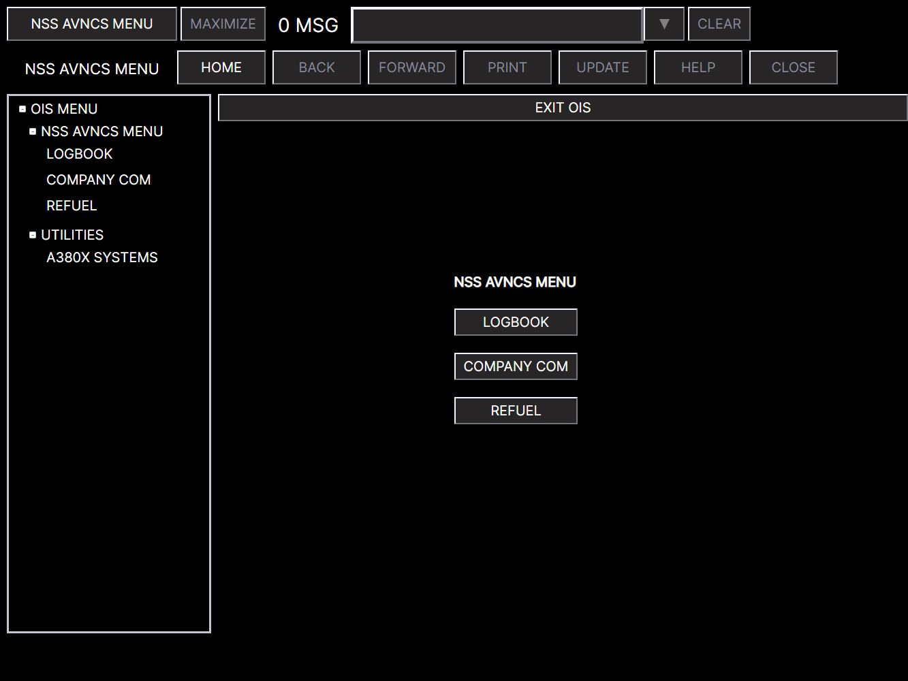
Figure 1. NSS AVNCS menu page: LOGBOOK, COMPANY COM and REFUEL
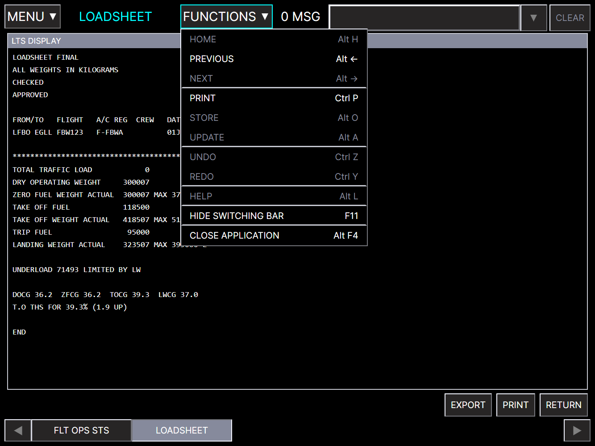
Figure 2. FLT OPS FUNCTIONS list on LOADSHEET: PRINT enabled once a loadsheet is generated, the greyed items have no function there
Limitations and why
Limitation
Why
What to do
UPDATE, UNDO, REDO and HELP of FUNCTIONS are greyed.
They are greyed in the FCOM figures too.
None.
HOME goes to the application home page, not to the FLT OPS MENU.
As the FCOM function list.
Use MENU > FLT OPS MENU or the OIS MENU key.
How to use
Open applications from the menu; switch between them with the switching bar (FLT OPS) or the task bar (NSS AVNCS).
Use FUNCTIONS (FLT OPS) or the line-2 buttons (NSS AVNCS) for PRINT, CLOSE and full screen.
How to test
#
Do this
Expected result
1
NSS AVNCS: open COMPANY COM, then LOGBOOK, then REFUEL.
The task bar shows COMPANY COM, LOGBOOK, REFUEL in this order, the active one highlighted.
2
CLOSE on LOGBOOK.
LOGBOOK leaves the task bar, the menu page shows.
3
FLT OPS: open T.O PERF and LOADSHEET, open FUNCTIONS.
The switching bar shows both; HIDE SWITCHING BAR hides it, SHOW brings it back.
3. COMPANY COM folders, report and request forms
Aircraft: A380X | Where: NSS AVNCS > COMPANY COM | Status: On core/a380x-ois and develop (the six OIS commits, files equal to develop). Sim-tested by the user 2026-10-18 in the combined OIS install: OK.
What it is for
COMPANY COM opens on its Inbox and counts the unread Inbox messages and the Outbox messages. The Outbox holds what was sent until the network confirms it, then it moves to Sent. The airline forms (INIT Data, Fuel Figures, Refuelling, Loadsheet Acceptance, Departure / Take Off / Gate Delay, Delay Code, ASR, Ramp Service, Diversion, ETA, Flight Summary) are plain forms pre-filled with the flight data the OIT has and sent as a free text to a station (COMPANY without one) over the Hoppie network.
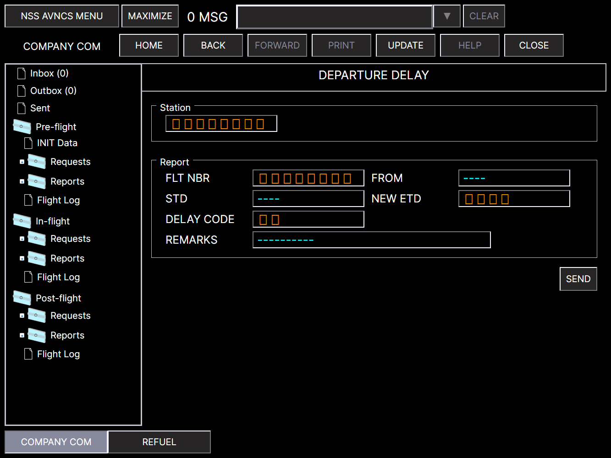
Figure 3. DEPARTURE DELAY form: amber boxes are mandatory, cyan dashes optional; the entries stay while COMPANY COM is open
Limitations and why
Limitation
Why
What to do
The forms are a design of ours.
The AOC is customised by each airline and the FCOM shows no form.
None.
NOTAM request stays greyed.
The datalink has no NOTAM source.
None.
How to use
COMPANY COM > Pre-flight / In-flight / Post-flight > Requests or Reports > the form.
Fill the amber boxes, check the pre-filled values, SEND. Follow it in Outbox, then Sent.
How to test
#
Do this
Expected result
1
Hoppie connected: send a Departure Delay with a station and a new ETD.
It shows in the Outbox, then in Sent; the station receives the text.
2
Leave the form, open the Inbox, come back to the form.
The entries are still there.
4. REFUEL
Aircraft: A380X | Where: NSS AVNCS > REFUEL | Status: On core/a380x-ois and develop (the six OIS commits, files equal to develop). Sim-tested by the user 2026-10-18 in the combined OIS install: OK.
What it is for
Shows the fuel on board, the preselected fuel quantity (PFQ) and the refuel state, and on the ground sets a new PFQ for the automatic refuel. A ZF data box takes a ZFW / ZFCG of its own for the CG targeting (ZFW 270-373 t, ZFCG 23-48 %, both needed), written to L:A32NX_FUEL_REFUEL_ZFW (kg) and L:A32NX_FUEL_REFUEL_ZFCG (% MAC); FQMS DEFAULT clears it (0).
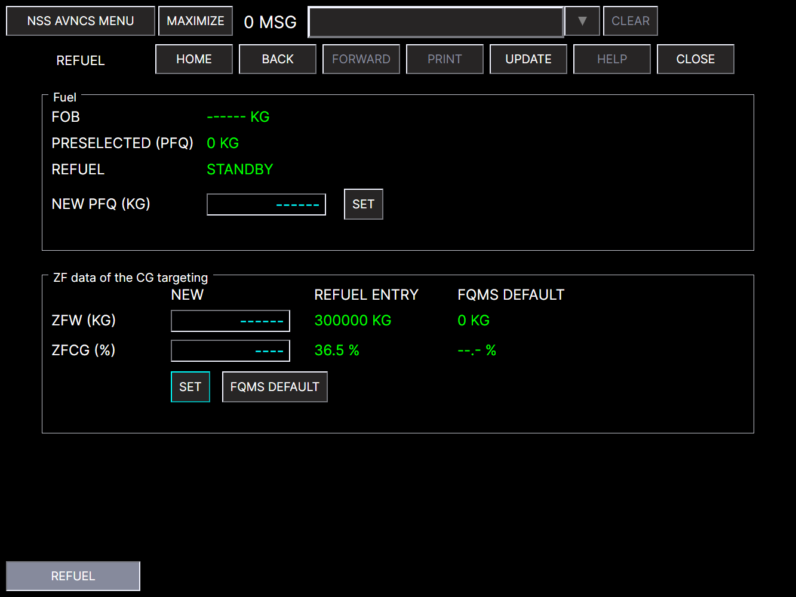
Figure 4. REFUEL after SET of a ZFW 300 t / ZFCG 36.5 % entry
Limitations and why
Limitation
Why
What to do
The ZF entry does not change the refuel yet.
The fuel system side that reads it (FQMS CG targeting with the REFUEL ZF data, FUEL REFUEL DATA / FMS DISAGREE) is on a separate branch, not merged.
None.
No entry in flight.
Design choice: refuel is a ground function.
None.
How to use
On the ground: NEW PFQ, SET. For the ZF data: ZFW and ZFCG, SET; FQMS DEFAULT to remove them.
How to test
#
Do this
Expected result
1
On the ground, NEW PFQ 150000 kg, SET.
PRESELECTED (PFQ) shows 150000 KG.
2
ZFW 300000, ZFCG 36.5, SET; then FQMS DEFAULT.
REFUEL ENTRY shows 300000 KG / 36.5 %, then nothing.
5. T.O PERF, LOADSHEET and LDG PERF
Aircraft: A380X | Where: FLT OPS > MENU > T.O PERF / LOADSHEET / LDG PERF | Status: On core/a380x-ois and develop (the six OIS commits, files equal to develop). Sim-tested by the user 2026-10-18 in the combined OIS install: OK.
What it is for
T.O PERF: CONDITIONS, a runway of the departure airport, COMPUTE: speeds, flaps, FLEX or derate, MTOW(perf), from the shared A380 takeoff calculator (the flyPad's). XCHECK WITH AVNCS compares them with the FMS T.O page, the SD gross weight and the captain's QNH and lists the discrepancies in amber.
LOADSHEET (REDUCED mode): TOW/CG, LW/CG, underload and T.O THS from the ZFW/CG and the fuel; LTS EDITION, GENERATE, PRINT (titled LOADSHEET) and EXPORT to the EXPORT BOX. Its TOW and LW go to T.O PERF and LDG PERF.
LDG PERF: DISPATCH and IN-FLIGHT landing distance, stop margin, MLW(perf), VAPP and go-around data for a runway of the destination.
The entries and results stay while the application is open.
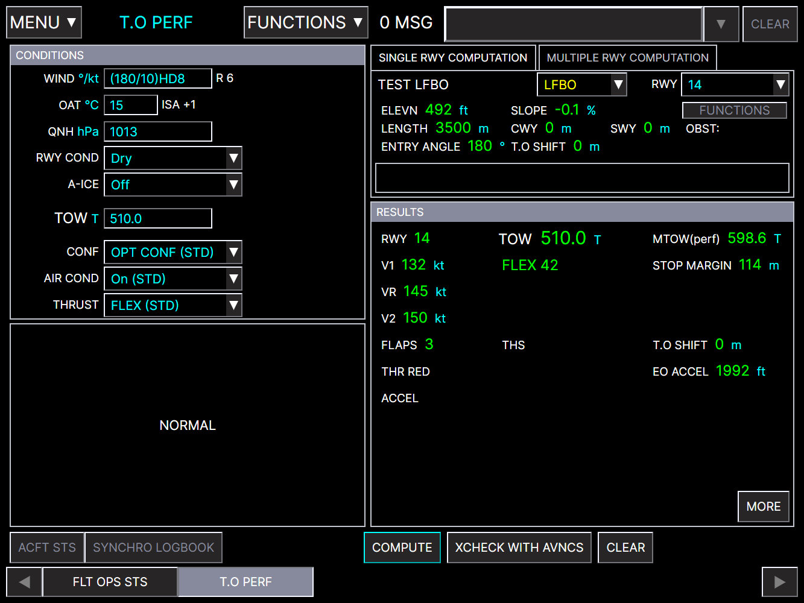
Figure 5. T.O PERF computed at LFBO RWY 14
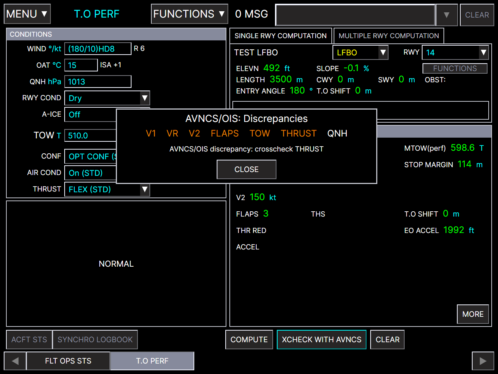
Figure 6. XCHECK WITH AVNCS with nothing in the FMS: every item in amber
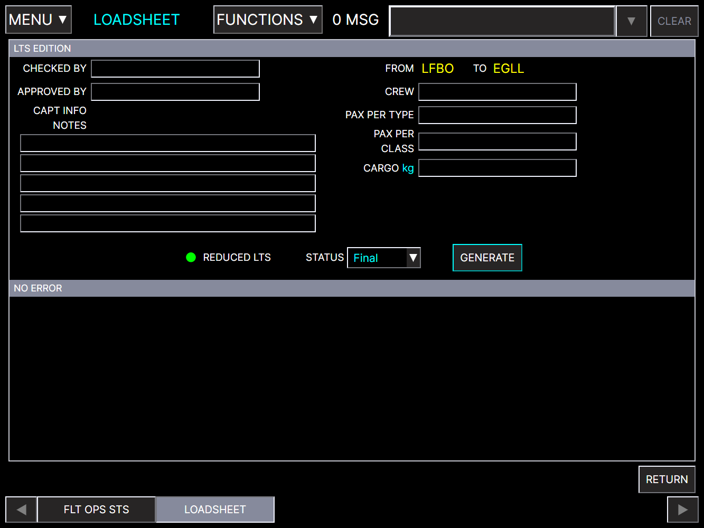
Figure 7. LOADSHEET after GENERATE
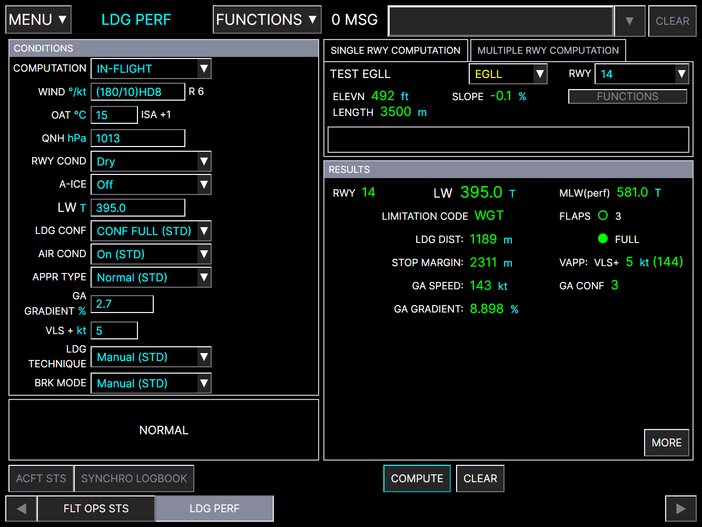
Figure 8. LDG PERF computed
PRINT, MULTIPLE RWY, the DETAILED loadsheet, REFUEL ZF DATA, MORE and ACFT STS: see "Performance applications" below.
Limitations and why
Limitation
Why
What to do
Nothing goes to the FMS.
As on the aircraft: XCHECK only compares.
Enter the values in the MFD.
Above the 10 kt tailwind limit LDG PERF still computes, without a mark.
The shared calculator continues the tailwind correction of the data and flags the result; the OIT page does not show that flag (as on develop).
Treat a result with more than 10 kt of tailwind as extrapolated.
How to use
FLT OPS STS: flight number and airports. LOADSHEET: ZFW/CG and fuel, COMPUTE, LTS EDITION, GENERATE.
T.O PERF: conditions and runway (TOW comes from the loadsheet), COMPUTE, then XCHECK WITH AVNCS.
TOW is the loadsheet TOW (yellow); COMPUTE gives speeds and FLEX.
3
Switch to another application and back.
Entries and results are still there.
6. Technical LOGBOOK
Aircraft: A380X | Where: NSS AVNCS > LOGBOOK | Status: On core/a380x-ois and develop (the six OIS commits, files equal to develop). Sim-tested by the user 2026-10-18 in the combined OIS install: OK.
What it is for
The electronic technical logbook: STATUS (release, open / deferred / temporary / cabin items), LOGBOOK ENTRY (ECAM alerts, cabin items, system & function, cockpit interface, keyword, free text), HISTORY and FLIGHT DATA; PIC ACCEPT with the acceptance report and CLOSE FLIGHT with the closure report; UPDATE / GIVE BACK TO GROUND synchronise with a simulated ground. Design choice: the ground defers some defects by ATA chapter (MEL B/C/D, CDL, OTHER) with an expiry and rectifies the others. The logbook is kept across flights; STATUS, the acceptance report and FLIGHT DATA print with their titles.
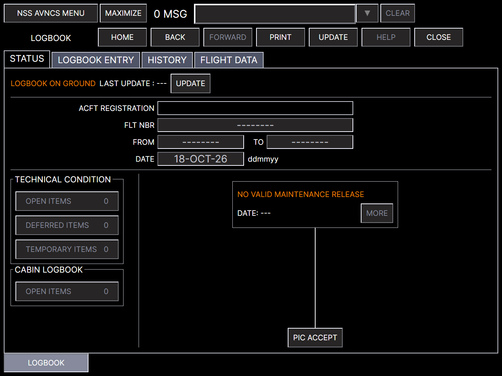
Figure 9. STATUS
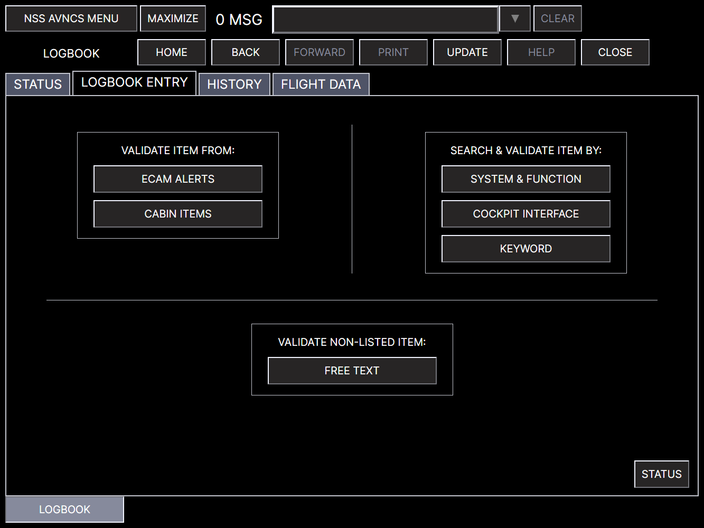
Figure 10. LOGBOOK ENTRY
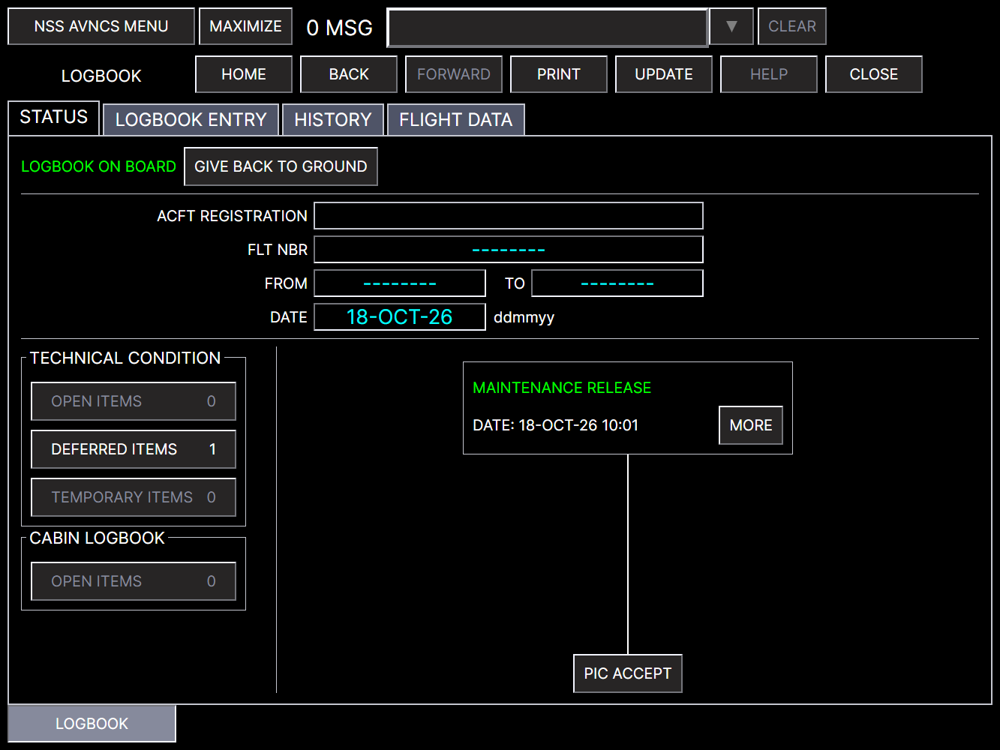
Figure 11. After UPDATE with the ground
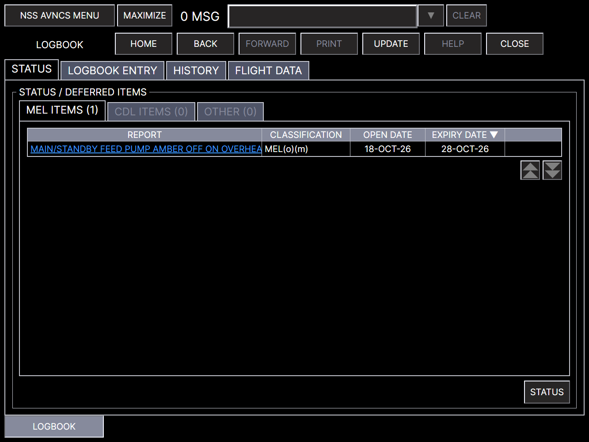
Figure 12. DEFERRED ITEMS: a defect deferred under the MEL with its expiry
Limitations and why
Limitation
Why
What to do
The ground is simulated.
There is no maintenance organisation behind the logbook.
None.
Some UX gaps: the password field may need a second click, NIL is not clickable, PERSONAL ID is not kept between signatures.
Known, not fixed yet.
Click the field again.
How to use
Open LOGBOOK, sign in with a personal ID and password.
Check STATUS and the items, open the flight, PIC ACCEPT. Record defects in LOGBOOK ENTRY; CLOSE FLIGHT at the end; UPDATE to synchronise with the ground.
How to test
#
Do this
Expected result
1
Record a defect (e.g. COCKPIT INTERFACE), GIVE BACK TO GROUND / UPDATE.
The defect is deferred (DEFERRED ITEMS with an expiry) or rectified (HISTORY).
2
PRINT on STATUS.
The printer prints LOGBOOK STATUS.
7. LOAD BOX, EXPORT BOX and IN-FLT PERF ATMO
Aircraft: A380X | Where: FLT OPS > MENU > LOAD BOX / EXPORT BOX / IN-FLT PERF | Status: On core/a380x-ois and develop (the six OIS commits, files equal to develop). Sim-tested by the user 2026-10-18 in the combined OIS install: OK.
What it is for
LOAD BOX: the flight folder sent from the ground, here your SimBrief OFP of the flyPad, with its loading status per laptop; LOAD loads the ticked items.
EXPORT BOX: items to send to the ground (a loaded flight folder, an exported loadsheet), GND tick and SEND; on the ground the gatelink sends them, else they wait in the outbox.
IN-FLT PERF ATMO: speed conversions (IAS, Mach, TAS, GS), ISA information, true altitude and low altitude temperature corrections. The FCOM describes only ATMO; CLB, CRZ, DES, HLD and PLAN are greyed.
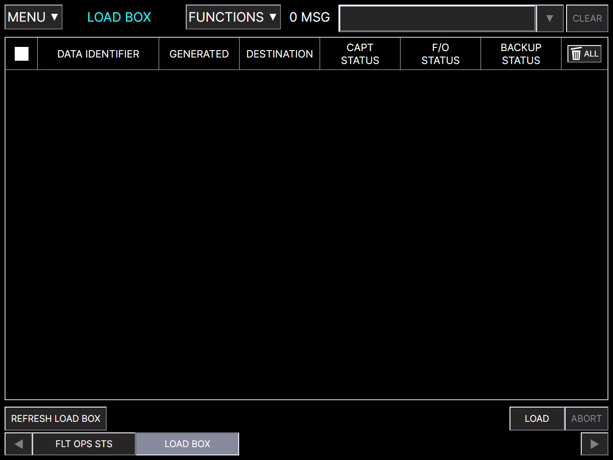
Figure 13. LOAD BOX (no SimBrief OFP loaded in the flyPad)
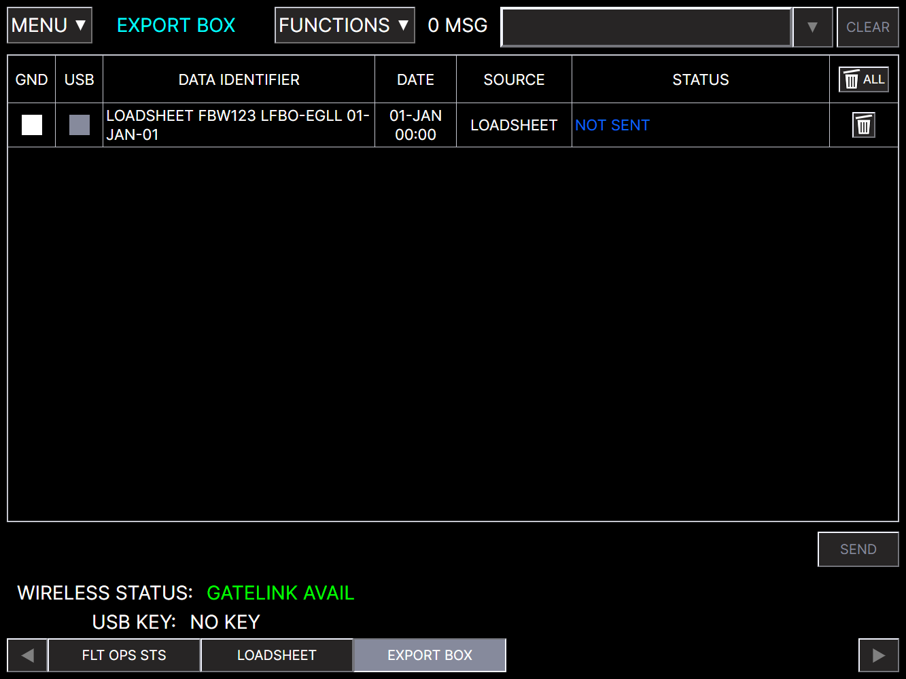
Figure 14. EXPORT BOX with an exported loadsheet
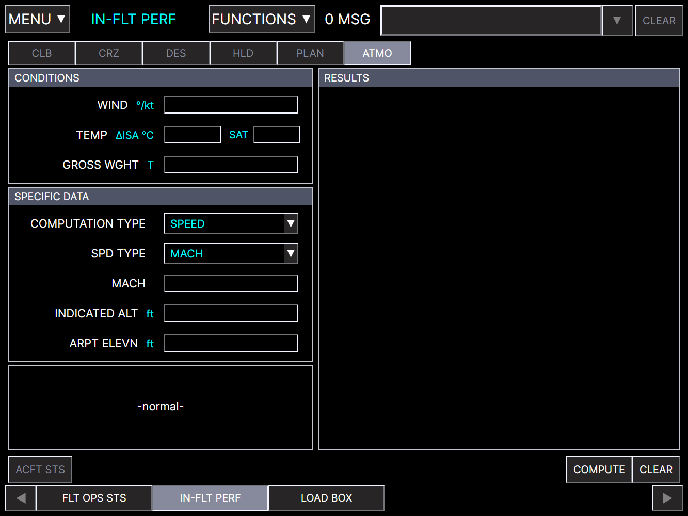
Figure 15. IN-FLT PERF ATMO
Limitations and why
Limitation
Why
What to do
Every airport has a gatelink.
Design choice: no airport database of gatelinks.
None.
GROSS WGHT of ATMO is not used.
No ATMO computation needs it; the field is kept for the FCOM layout.
None.
How to use
Load a SimBrief OFP in the flyPad, LOAD BOX > REFRESH LOAD BOX, tick it, LOAD.
EXPORT BOX: tick GND, SEND (on the ground).
IN-FLT PERF > ATMO: conditions and specific data, COMPUTE.
How to test
#
Do this
Expected result
1
ATMO: SPEED, MACH 0.85, FL350 with the FCOM example conditions, COMPUTE.
The results match the FCOM example.
2
LOADSHEET EXPORT, then EXPORT BOX, tick GND, SEND on the ground.
Status SENT (GND) with date and time.
8. FLT OPS STS filled from the FMS and shared by the CAPT and F/O laptops
Aircraft: A380X | Where: FLT OPS > FLT OPS STS, both OITs | Status: On core/a380x-ois and develop. Sim-tested 2026-10-21 on develop (T9): OK.
What it is for
FLT NBR, FROM and TO fill themselves from the FMS (flight number and city pair) until the crew types an entry; SYNCHRO AVIONICS takes the FMS values again and follows them anew.
The CAPT and F/O laptops show the same page: a manual entry, SYNCHRO AVIONICS and EXIT SESSION on one laptop reach the other one; a laptop that joins the FLT OPS network takes the page of the other laptop. EXIT SESSION clears both laptops' page.
The FMS data reach a laptop that runs on the FLT OPS network with an NSS AVNCS server and the avionics link of the NSS AVNCS side (not both SCIs lost). Without them the page keeps its entries, and SYNCHRO AVIONICS does not take the FMS flight plan either.
OIS VERSION shows the build of the aircraft; the registration list comes from the ATC ID.
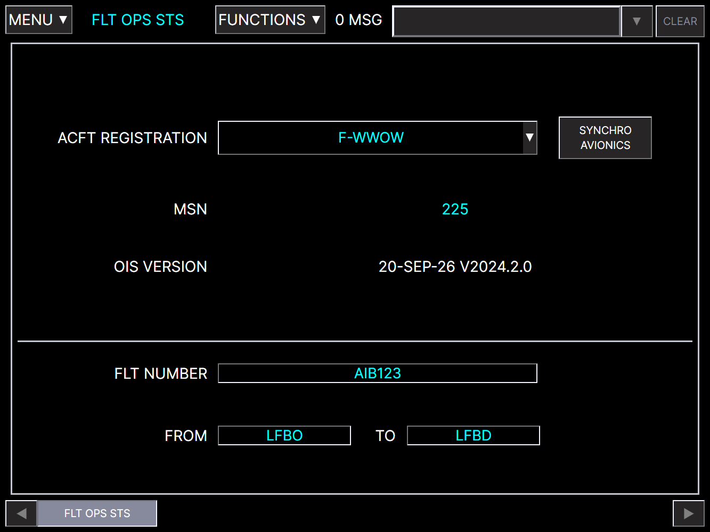
Figure 16. CAPT laptop: FLT OPS STS filled from the FMS
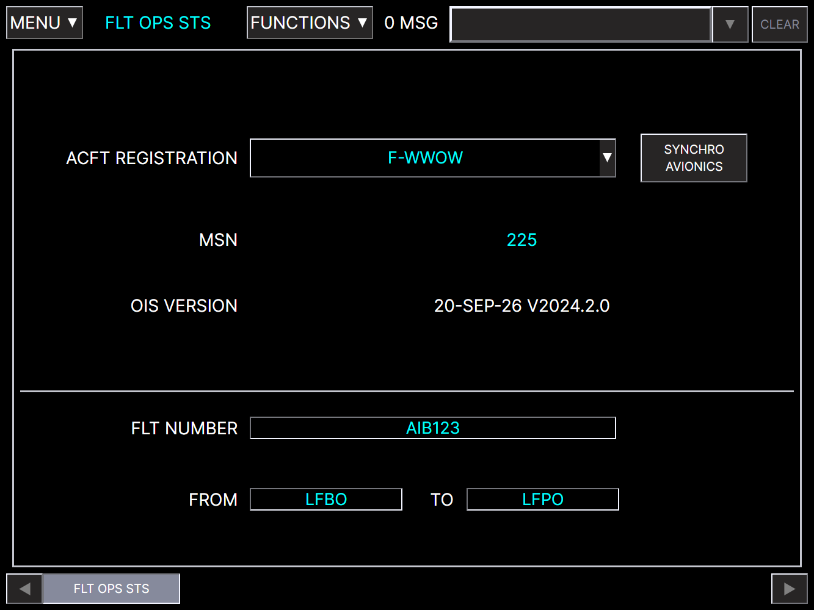
Figure 17. CAPT laptop showing the entry made on the F/O laptop
Limitations and why
Limitation
Why
What to do
A stand-alone laptop gets nothing.
Design choice: off the network it gets no avionics data and no exchange (SYNCHRONIZATION NOT AVAIL).
None.
An entry typed on a laptop that has just joined can be overwritten by the other laptop's answer.
A one-frame window while the two laptops exchange their pages.
Type the entry again.
How to use
Enter the flight number and the airports in the MFD: FLT OPS STS fills itself on both laptops.
Type an entry on one laptop to override the FMS; SYNCHRO AVIONICS to take the FMS values again.
How to test
#
Do this
Expected result
1
Both laptops on, MFD INIT: flight number and FROM / TO.
FLT OPS STS shows them on both laptops.
2
CAPT laptop: type another FLT NBR.
The F/O laptop shows it too; an FMS change no longer replaces it.
3
SYNCHRO AVIONICS.
Both laptops show the FMS values again.
9. NSS DATA TO AVNCS OFF and both SCIs lost on the OIS
Aircraft: A380X | Where: Overhead NSS panel (NSS DATA TO AVNCS pb-sw); flyPad > Failures > ATA 46 (SCI 1, SCI 2); NSS AVNCS | Status: On core/a380x-ois and develop. Sim-tested 2026-10-21 on develop (T7, T12): OK.
What it is for
With NSS DATA TO AVNCS OFF or both SCIs lost the NSS AVNCS side cannot send data to the avionics: the REFUEL entries (NEW PFQ, ZF data, FQMS DEFAULT) are not sent to the FQMS and REFUEL says NOT SENT: NSS DATA TO AVNCS INOP; the NSS AVNCS message toolbar shows the INOP system.
Both SCIs lost also cut the eLogbook ground link (UPDATE / GIVE BACK TO GROUND fail) and the avionics data (the FLT OPS STS page keeps its entries).
The AOC itself stops receiving while it is off (on core/a380x-ois-datalink).
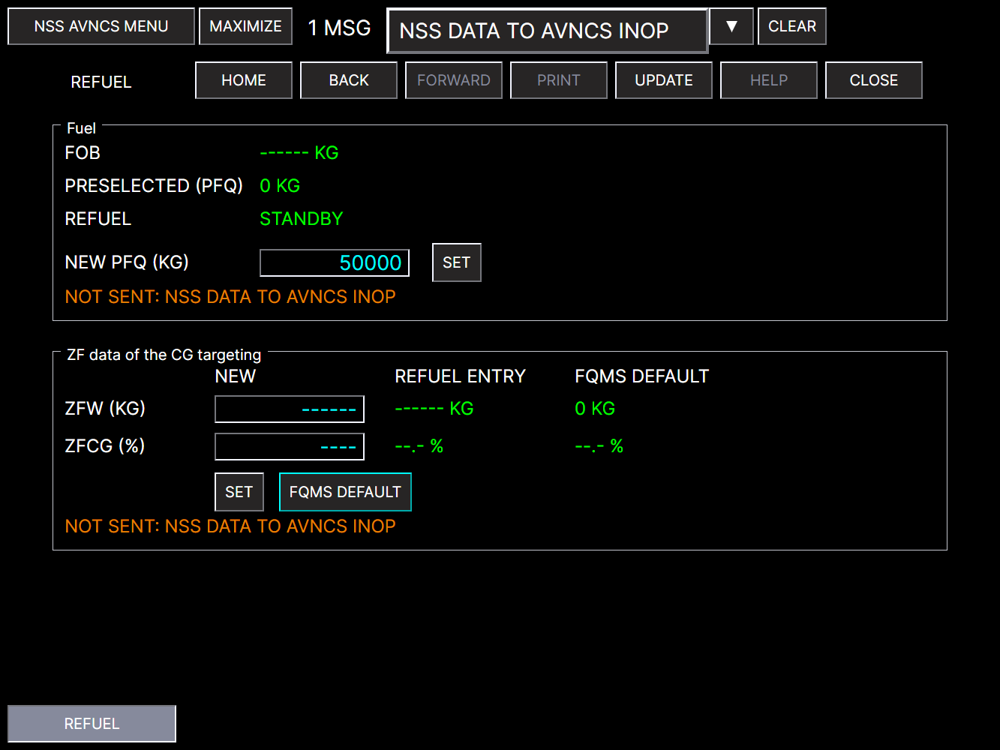
Figure 18. REFUEL with NSS DATA TO AVNCS OFF: NOT SENT
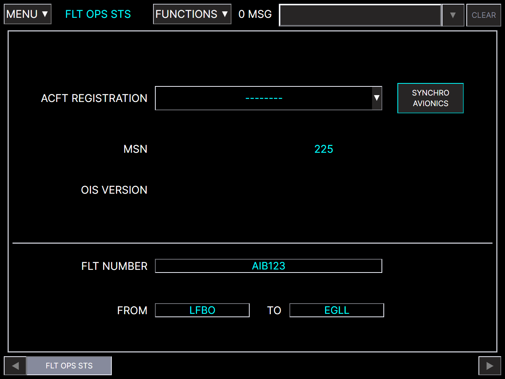
Figure 19. FLT OPS STS with both SCIs lost
Limitations and why
Limitation
Why
What to do
No COMPANY MSG memo / voice change and no COM NSS DATA TO AVNCS XFR FAULT alert on this branch.
The FWS part of this change needs FWS alerts that are on develop only.
None.
How to use
Leave NSS DATA TO AVNCS in its normal position; with OFF, enter the refuel on the refuel panel.
How to test
#
Do this
Expected result
1
On the ground, press NSS DATA TO AVNCS (OFF light). NSS AVNCS > REFUEL: NEW PFQ 50000, SET.
NOT SENT: NSS DATA TO AVNCS INOP; the PFQ does not change; the toolbar shows NSS DATA TO AVNCS INOP.
2
Release the pb-sw. flyPad > Failures > ATA 46: SCI 1 and SCI 2. LOGBOOK: GIVE BACK TO GROUND.
The synchronisation with the ground fails; REFUEL entries are NOT SENT.
10. AOC weather auto-print
Aircraft: A380X | Where: Pedestal printer; NSS AVNCS > COMPANY COM | Status: On core/a380x-ois and develop. Sim-tested 2026-10-21 on develop (T8): OK.
What it is for
The AOC prints the weather reports it receives (METAR, TAF, ATIS) by itself on the pedestal printer. L:A32NX_COMPANY_MSG_PRNTR_COUNT counts the ones waiting for their printout until they are printed or read; on develop the COMPANY MSG memo then reads COMPANY MSG:PRNTR.
Limitations and why
Limitation
Why
What to do
Only the weather reports print by themselves.
User choice: the other company messages are printed with PRINT.
None.
With the printer off the message waits until it is read.
The printer must acknowledge the printout.
Switch the printer on.
How to use
Request a METAR in COMPANY COM: the answer prints by itself.
How to test
#
Do this
Expected result
1
Printer on, Hoppie connected: COMPANY COM, request the METAR of the departure airport.
The METAR prints on the pedestal printer by itself.
Aircraft: A380X | Where: FLT OPS > T.O PERF / LDG PERF / LOADSHEET | Status: On core/a380x-ois and develop. Sim-tested 2026-10-21 on develop (T10, T11): OK. LDG PERF PRINT and MULTIPLE RWY not sim-tested (same code as T.O PERF).
What it is for
PRINT in FUNCTIONS of T.O PERF and LDG PERF prints the results under the title of the application. STORE stays greyed (no EFF to store into).
MULTIPLE RWY COMPUTATION (T.O PERF, LDG PERF): tick runways of the airport, COMPUTE them at once and pick each result in the colour-coded RWY list.
LOADSHEET REFUEL ZF DATA: FQMS DEFAULT, NEW SET OF DATA (the REFUEL application's data) or LOADSHEET (default), with the fuel distribution of the FQMS CG targeting. MORE: the TOCG warning and the automatic ground transfer to the CG limit and to the refuel target.
LOADSHEET DETAILED: crew, passengers and cargo with their distribution in the cabin and the holds, and the detailed loadsheet with its edition number.
ACFT STS and SYNCHRO LOGBOOK: the deferred MEL and CDL items of the technical logbook, with the items the computation cannot take into account ("n ITEMS NOT IN COMPUTATION, SEE ACFT STS").
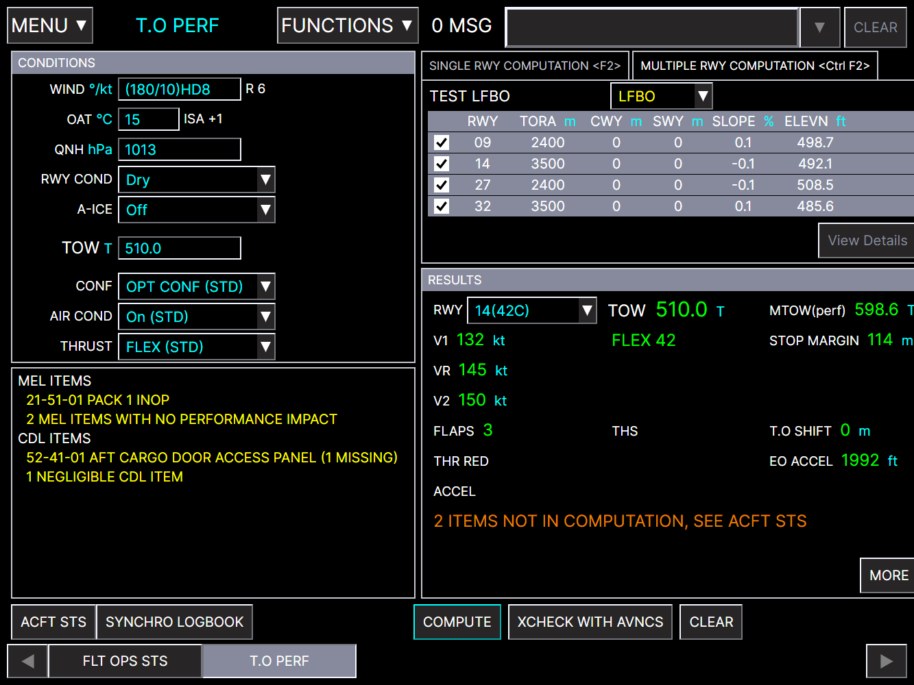
Figure 20. T.O PERF: MULTIPLE RWY with four runways, the MEL / CDL items of ACFT STS
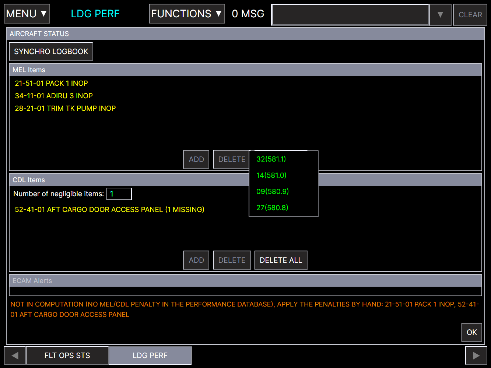
Figure 21. LDG PERF with ACFT STS
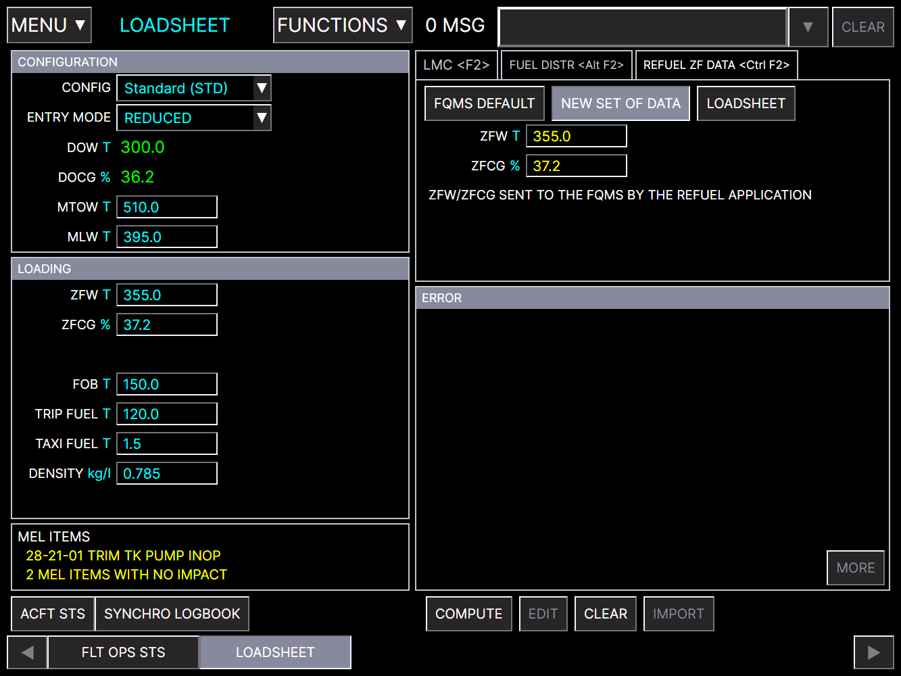
Figure 22. LOADSHEET REFUEL ZF DATA
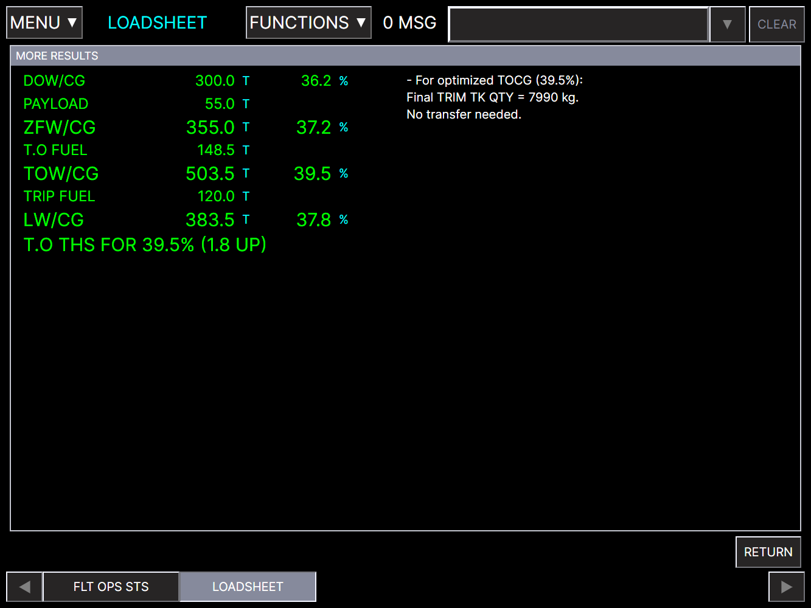
Figure 23. LOADSHEET MORE panel
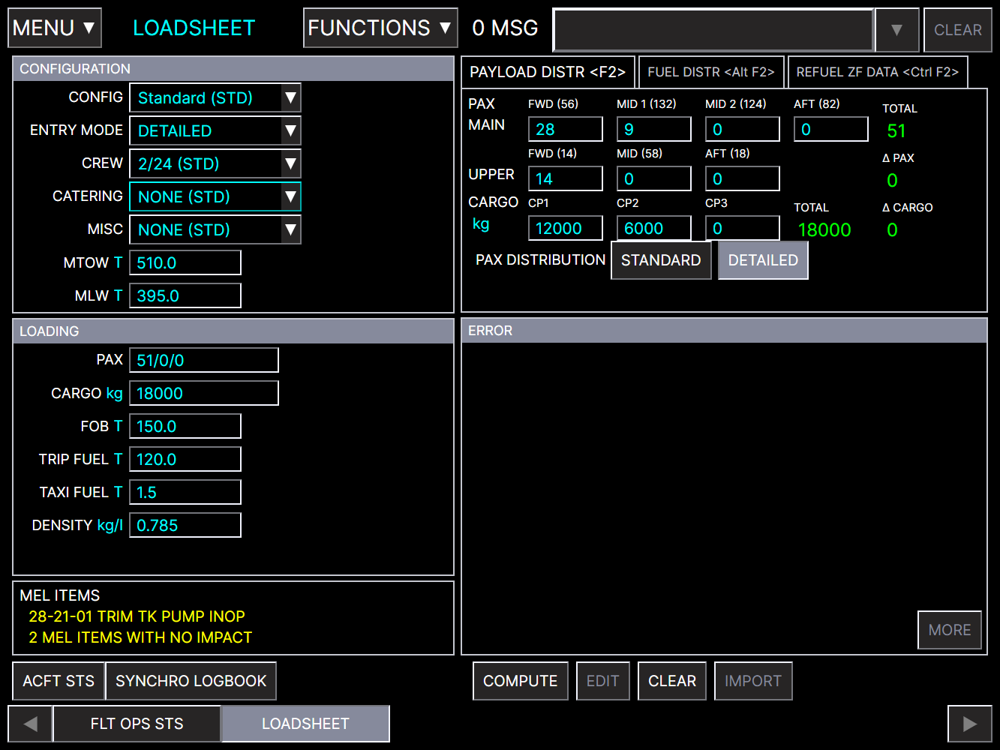
Figure 24. LOADSHEET DETAILED: payload distribution
Limitations and why
Limitation
Why
What to do
STORE is greyed.
The flight folder is there now (FLT FOLDER) and can receive a stored result, but no performance page offers STORE yet.
Use PRINT.
Items the computation cannot take into account are listed, not computed.
The shared performance calculators have no MEL / CDL corrections.
Apply them by hand.
How to use
T.O PERF / LDG PERF: MULTIPLE RWY COMPUTATION tab, tick the runways, COMPUTE, pick a runway in the RWY list; FUNCTIONS > PRINT.
LOADSHEET: ENTRY MODE DETAILED for crew / passengers / cargo; REFUEL ZF DATA tab for the FQMS ZF data; MORE for the TOCG and the ground transfer.
SYNCHRO LOGBOOK, then ACFT STS, to see the deferred items.
One result per runway in the RWY list; the printer prints T.O PERF.
2
LOADSHEET: DETAILED, crew and passengers, COMPUTE, GENERATE, PRINT.
The detailed loadsheet prints with its edition number.
3
With a deferred MEL item in the logbook: SYNCHRO LOGBOOK, ACFT STS.
The MEL item is listed, with the items not in the computation.
12. NSS GATELINK pb-sw, reset recovery and the NSS shutdown on lost AC power
Aircraft: A380X | Where: Overhead NSS panel (GATELINK pb-sw), OIT BRIGHTNESS knob, laptops | Status: On core/a380x-ois and develop. Sim-tested 2026-10-28 / 29 on develop (T14-T18): OK.
What it is for
The GATELINK pb-sw (L:A32NX_OVHD_NSS_GATELINK_OFF) works: with it OFF the EXPORT BOX has no gatelink and the LOAD BOX gets no data from the ground.
Reset recovery: an OIT that is restarted (BRIGHTNESS knob OFF for 5 s) or a laptop that is restarted (OFF for 30 s) clears an injected failure of that device.
NSS shutdown: each NSS ANSU shuts itself down 10 s after the AC busbar that feeds it is lost, but only when that busbar was supplied once (power that was on and is lost). A flight load, where the busbars report late, therefore no longer restarts the ARU or leaves the FLT OPS laptop stand-alone.
The ARU start follows the flyPad start-up time setting (INSTANT 0 s, FAST 5 s, REAL 120 s, the default) and needs a healthy FLT OPS ANSU; a flight load gets a 10 s window in which an already running laptop is kept.
Limitations and why
Limitation
Why
What to do
The GATELINK has no picture of its own.
Its effect is the absence of data in the LOAD BOX and of the gatelink in the EXPORT BOX.
Check the two applications.
How to use
Press the GATELINK pb-sw OFF to cut the ground link; set the OIT BRIGHTNESS knob to OFF for 5 s (OIT) or 30 s (laptop) to restart the device.
How to test
#
Do this
Expected result
1
On the ground with the NSS powered: GATELINK pb-sw OFF, open LOAD BOX and EXPORT BOX.
LOAD BOX gets no data from the ground and EXPORT BOX has no gatelink; ON gives both back.
2
Load a flight in the air or on the ground and watch the FLT OPS laptop for two minutes.
The laptop stays on the network (not stand-alone) and its ARU does not restart.
3
Switch the aircraft power off.
The ANSUs shut down 10 s after the AC bus that feeds them is lost.
13. Laptop keyboard: function keys, CTRL / ALT latch, brightness gate
Aircraft: A380X | Where: CAPT and F/O laptop keyboards | Status: On core/a380x-ois and develop. Sim-tested 2026-10-28 / 29 on develop: OK.
What it is for
The function keys press the OIT buttons that show them (COMPUTE <F8>, the tabs <F2> and <Ctrl F2>...).
CTRL and ALT latch for the next key, because the 3D keyboard has no chords: the key lamp stays lit while the modifier is latched, then the menu shortcut (Ctrl P, Alt H...) is sent.
The OIT BRIGHTNESS knob at OFF also switches off the keyboard and the ACD.
COMPANY COM and LOGBOOK start at the NSS AVNCS log-on.
Figure 25. T.O PERF with the tabs and their shortcuts
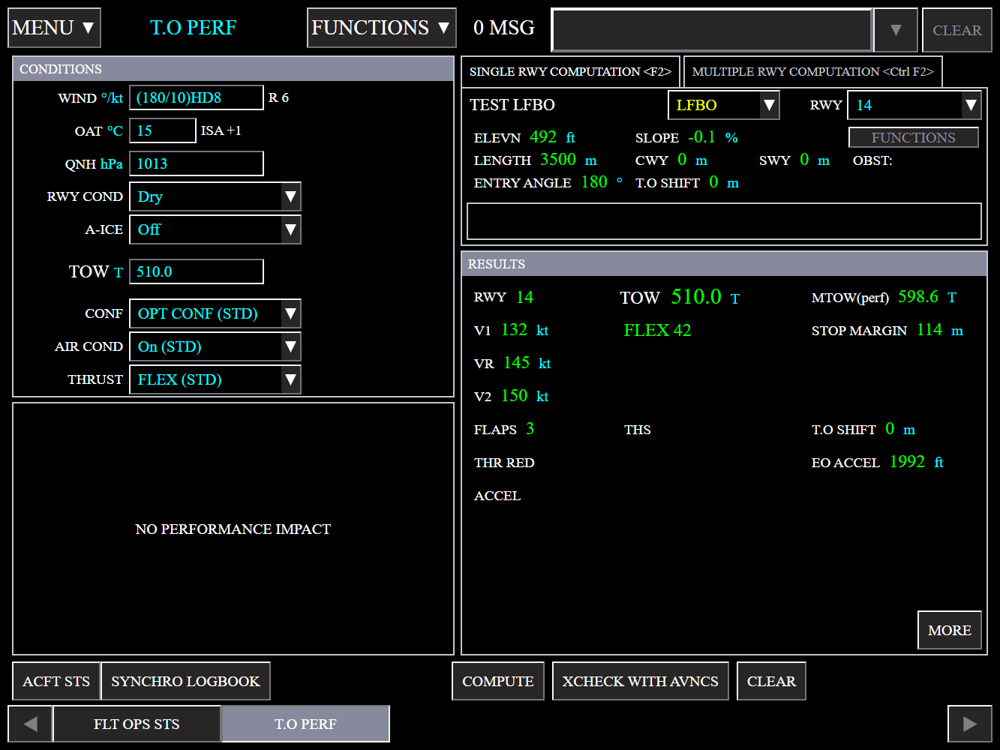
Figure 26. COMPUTE <F8> pressed from the keyboard
Limitations and why
Limitation
Why
What to do
A latched CTRL or ALT has one lamp only.
The key has a single lamp: it is lit while latched and dark otherwise.
Press the next key; the latch clears after it.
How to use
Press F8 in T.O PERF to COMPUTE; press CTRL, then F2, for the MULTIPLE RWY tab.
How to test
#
Do this
Expected result
1
T.O PERF with valid conditions: press F8 on the laptop keyboard.
The results are computed, as with COMPUTE.
2
Press CTRL (lamp lit), then F2.
The MULTIPLE RWY tab opens and the lamp goes dark.
3
OIT BRIGHTNESS knob to OFF.
The OIT, the keyboard lamps and the ACD go dark.
14. LOGBOOK usability: PERSONAL ID, STORE IN, UPDATE / GIVE BACK messages
Aircraft: A380X | Where: NSS AVNCS > LOGBOOK | Status: On core/a380x-ois and develop. Sim-tested 2026-10-28 / 29 on develop: OK. The InputField change is shared with the MFD and the ND.
What it is for
An accepted identification or signature keeps the typed PERSONAL ID for the next signature of the same log-on; CANCEL drops it; the password is never kept.
STORE IN shows OPEN ITEMS until the crew chooses (design choice: the FCOM figures show either storage selected, none preselected).
The end of an UPDATE or GIVE BACK synchronisation gives a plain message.
The input fields (shared with the MFD and the ND) release the previous field before the next one takes focus, so the field just selected keeps the keyboard.
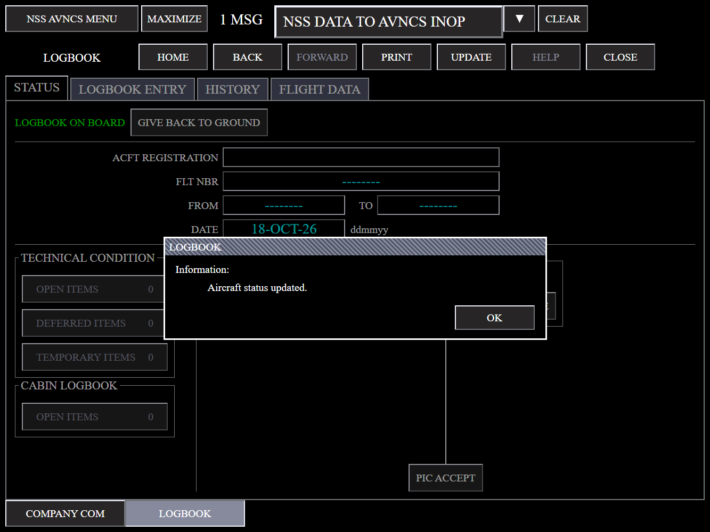
Figure 27. LOGBOOK: message at the end of an UPDATE
Limitations and why
Limitation
Why
What to do
The end-of-synchronisation messages are our wording.
The manual shows no message there.
None.
How to use
Log on, sign an entry, then sign the next one: the PERSONAL ID is still typed.
How to test
#
Do this
Expected result
1
LOGBOOK: sign a first entry with a PERSONAL ID, then start the next signature.
The PERSONAL ID is already filled; after CANCEL it is empty.
2
Click one input field, then another, in the LOGBOOK, MFD and ND.
The second field takes the keyboard.
15. LOADSHEET fuel distribution modes and the CG diagram
Aircraft: A380X | Where: FLT OPS > LOADSHEET | Status: On core/a380x-ois and develop. Sim-tested 2026-10-28 / 29 on develop: OK.
What it is for
LOADSHEET FUEL DISTR offers TRIM ADJUSTMENT and MANUAL DISTR next to CG TARGETING.
MANUAL DISTR must equal the FOB exactly (the FCOM allows no tolerance). A tank box that still shows the value computed before keeps the exact quantity, so a displayed value typed back raises no error.
The MORE panel draws the CG diagram with the DOW, ZFW, TOW and LW points.
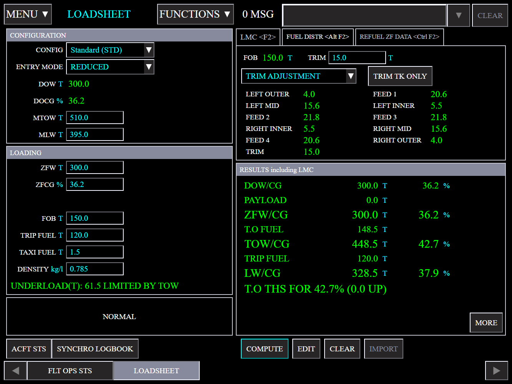
Figure 28. TRIM ADJUSTMENT
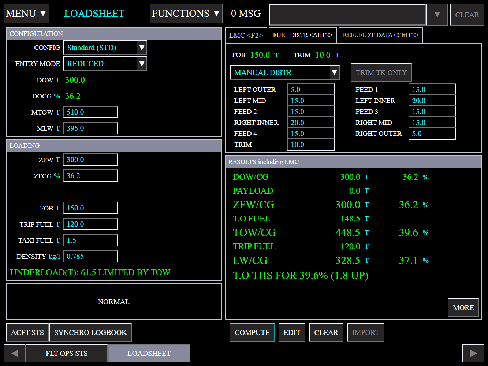
Figure 29. MANUAL DISTR with the sum equal to the FOB
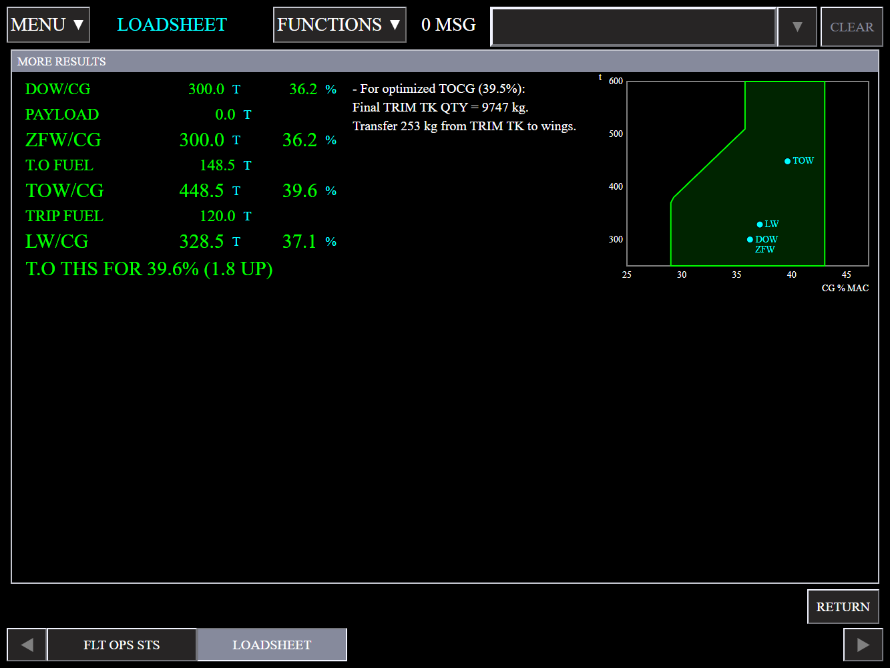
Figure 30. LOADSHEET MORE: the CG diagram
Limitations and why
Limitation
Why
What to do
No tolerance on MANUAL DISTR.
The FCOM requires the manual distribution to be identical to the FOB.
Type the distribution so that the sum equals the FOB.
How to use
LOADSHEET > FUEL DISTR: choose the mode, enter the values, COMPUTE; MORE for the diagram.
How to test
#
Do this
Expected result
1
MANUAL DISTR, change one tank by +1 t.
The distribution is refused (sum differs from the FOB).
2
Type the displayed value of that tank back.
No error.
3
MORE.
The diagram shows the DOW, ZFW, TOW and LW points inside the envelope.
Aircraft: A380X | Where: FLT OPS > MENU > OPS LIBRARY | Status: On core/a380x-ois and develop. Sim-tested by the user 2026-10-29 on develop (cards T19-T31): OK. Not sim-tested on the core branch itself.
What it is for
OPS LIBRARY is a new FLT OPS application: the pilots read manuals on the OIT. It opens on the home page with six tabs: LIBRARY, ECAM ALERTS, LOGBOOK STATUS, SEARCH, BOOKMARKS and ABOUT.
LIBRARY lists the manuals with their revision date: FBW A380X FEATURE MANUAL, FBW A380X SIMVARS, ECAM PROCEDURES and MMEL. The Check menu checks one manual (unit count and content hash) and writes Success, Failed or Aborted with the date behind it, kept per laptop. About opens the ABOUT tab (software version of the laptop, number and revision of the manuals).
Consultation view (click a manual): the navigation tree on the left (radio buttons Path or Tree under it, HIDE TREE / SHOW TREE), the unit on the right with its Path : line, the back and forward arrows, << and >> (previous / next unit), SUB-TOPICS (jump to a heading of the unit), INFO (DOC REF), the layers 1 2 3 (a layer that does not exist is greyed), BOOKMARKS (add to the list, organise), NOTE (a text of your own on the unit, saved per laptop, shown as a note line under the unit in the tree) and SEARCH in the document (hits highlighted).
ECAM PROCEDURES are drawn from the abnormal procedures of the aircraft (for example APU FIRE: the lines of the procedure with their actions). ECAM ALERTS lists the ECAM alerts of the flight, newest first, in the red or amber of the alert, with the time. The SEARCH link of an alert opens its procedure, the recycle bin and RESTORE ALL tidy the list. The list restarts when the eLogbook closes a flight. Without avionics data it shows ECAM ALERTS NOT AVAILABLE.
LOGBOOK STATUS lists the deferred MEL and CDL items of the eLogbook (tables REPORT / PROPOSED ITEM, SYNCHRO LOGBOOK); the PROPOSED ITEM link opens the MMEL entry, where a tick box adds the item to the FLT OPS aircraft status (the items T.O PERF and LDG PERF list in ACFT STS). Nothing is written back to the eLogbook.
SEARCH tab: WORD SEARCH (several words mean "or", and binds first, a phrase in quotes is searched as written; more than 50 hits asks first), ECAM SEARCH (an ECAM title: the procedure and the MMEL entry) and FUNCTIONAL CODE SEARCH (an ATA chapter such as 24 or 24-11). CONSULT opens the hit.
BOOKMARKS tab: Trace, Interruption, Airline and Pilot lists, with CONSULT, DELETE and CLEAR.
HOME in the FUNCTIONS menu closes the manual and returns to the home page of the application (greyed there).
Scroll bars are operated by clicks (arrow buttons and a thumb you drag), because the sim sends no mouse wheel to the OIT.
Where the text comes from
The text is the fork's own (Design choice: no Airbus text). The FEATURE MANUAL and the SIMVARS manual are generated from the user manuals and the simvar documents of this repository by tools/manual-generator/manuals/core/export_ops_library.py into System/OpsLibrary/ops-library-content.json; the ECAM procedures come from the abnormal procedure tables of the aircraft. A check value of the content guards against a stale file.
NoteLicence: the manual text shown in OPS LIBRARY is derived from this repository's own manuals and simvar documents and is distributed under the same GPLv3 as the repository.
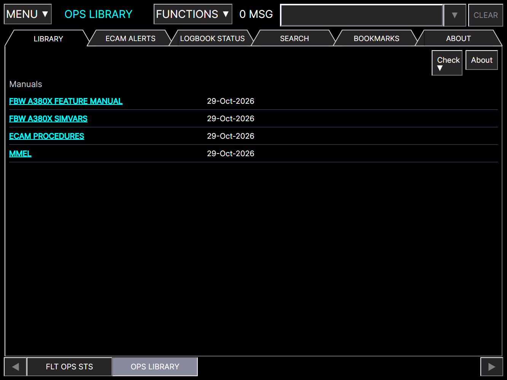
Figure 33. OPS LIBRARY home: LIBRARY tab with the four manuals
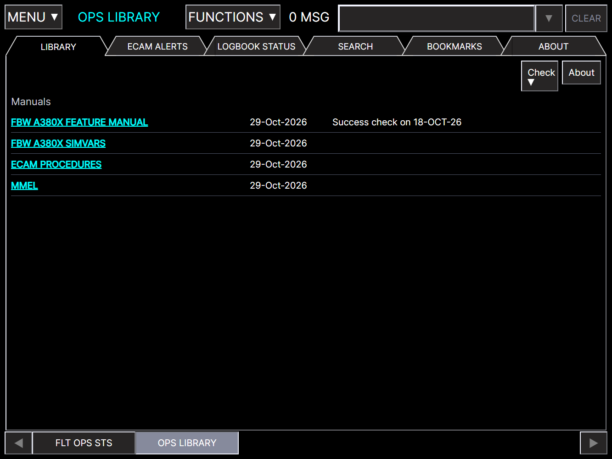
Figure 34. Check run on the FEATURE MANUAL: Success with the date
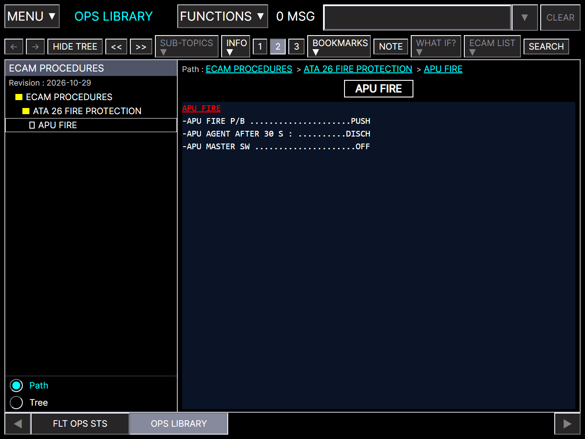
Figure 35. Consultation view of an ECAM procedure (APU FIRE), Path mode
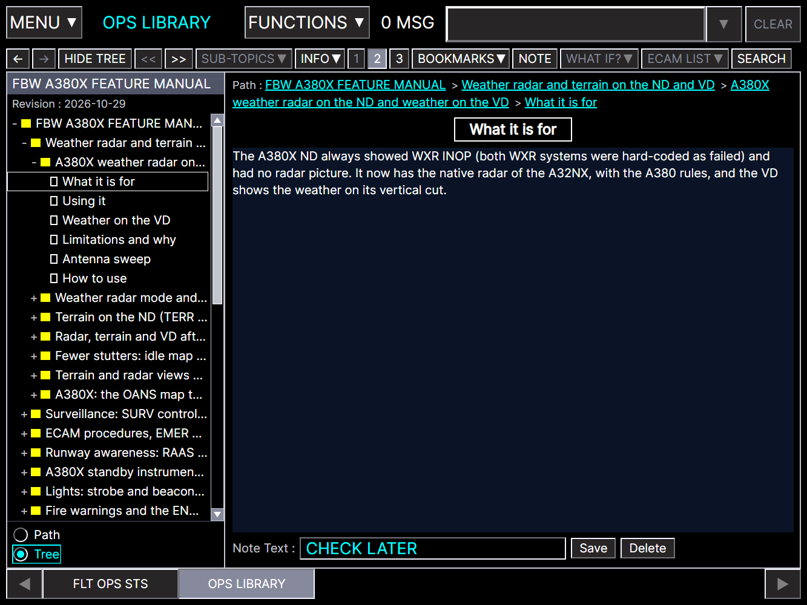
Figure 36. Tree mode with a NOTE on a unit of the FEATURE MANUAL
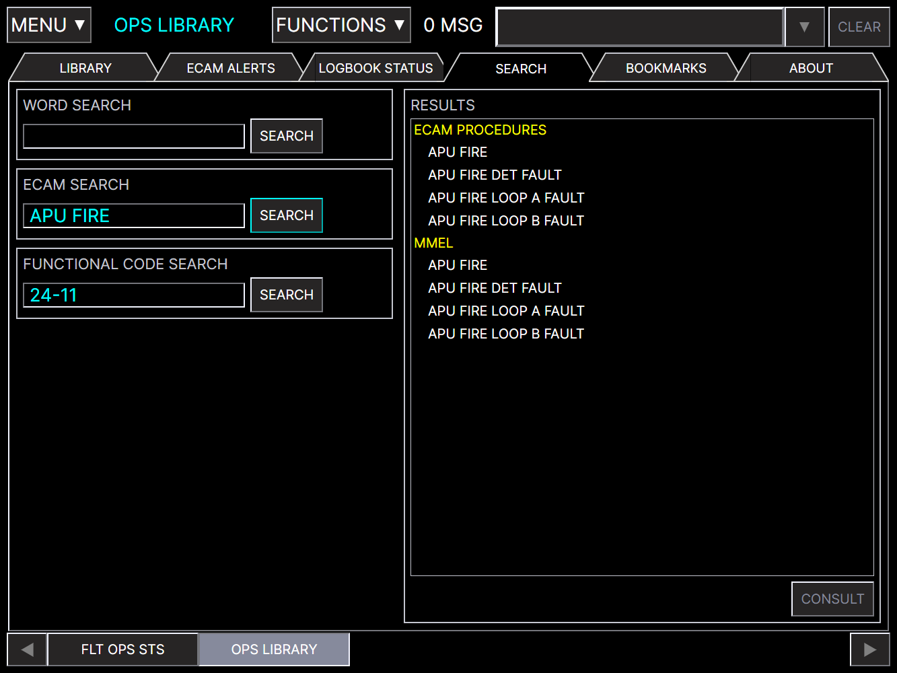
Figure 37. SEARCH tab: ECAM SEARCH and FUNCTIONAL CODE SEARCH
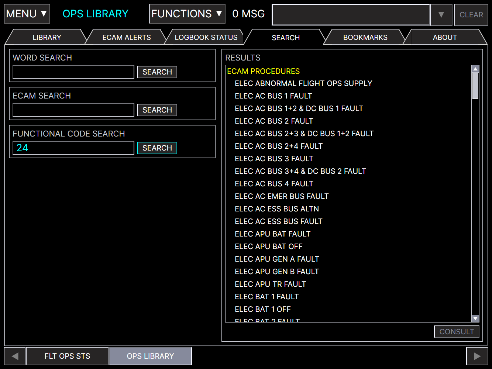
Figure 38. A long result list with its click-operated scroll bar
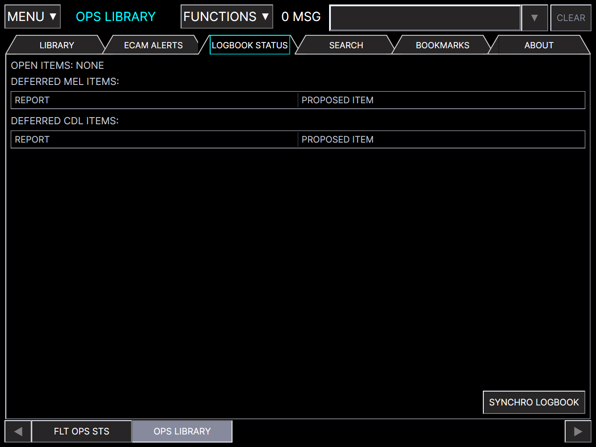
Figure 39. LOGBOOK STATUS with no deferred item
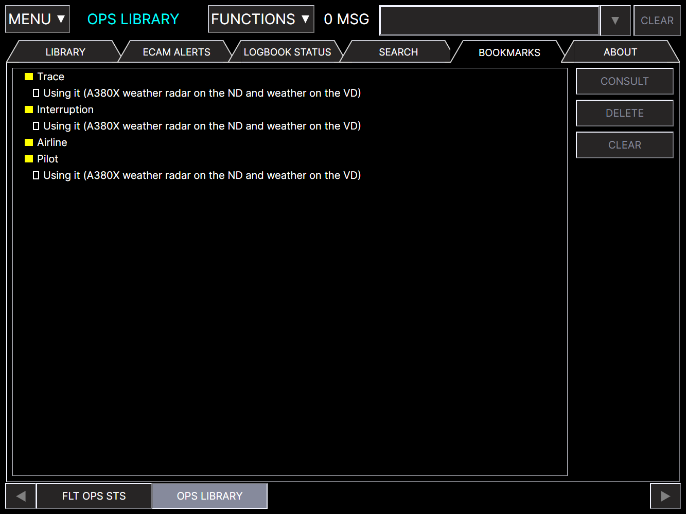
Figure 40. BOOKMARKS tab
Limitations and why
Limitation
Why
What to do
WHAT IF? is always greyed.
There are no scenarios to show: the library has no Airbus scenario text (Design choice).
None.
ECAM LIST is active only on an MMEL ENTRIES unit.
The MMEL is a structure only (ATA chapters, one entry per ECAM alert, the deferred logbook items); it holds no Airbus MMEL text.
Use ECAM SEARCH to reach the procedure of an alert.
INFO has DOC REF only; Expand / Collapse are missing, REV MARKS and CRM are greyed.
The FCOM shows them "when applicable" and the fork's content has no revision marks or CRM units.
None.
The manuals are the fork's own.
No Airbus manual text may be shipped.
None.
How to use
FLT OPS > MENU > OPS LIBRARY. On the LIBRARY tab click a manual, then use the tree, SUB-TOPICS and the layers 1 2 3.
BOOKMARKS > ADD TO LIST to keep a unit; NOTE to write a note on it; SEARCH for a word in the manual.
During a flight, ECAM ALERTS shows the alerts so far; click SEARCH beside one to read its procedure.
LOGBOOK STATUS > SYNCHRO LOGBOOK for the deferred items.
FUNCTIONS > HOME to leave a manual.
How to test
#
Do this
Expected result
1
FLT OPS > MENU > OPS LIBRARY.
The home page shows the six tabs; LIBRARY lists FBW A380X FEATURE MANUAL, FBW A380X SIMVARS, ECAM PROCEDURES and MMEL with a date.
2
Check > FBW A380X FEATURE MANUAL.
A line "Success check on" and the date appears behind that manual.
3
Click ECAM PROCEDURES, open ATA 26 FIRE PROTECTION, then APU FIRE.
The procedure lines of APU FIRE are shown (APU FIRE P/B, APU AGENT, APU MASTER SW) and the Path line names the three levels.
4
Click Tree under the navigation tree, then NOTE, type a text, Save.
The tree is shown in full; a note line appears under the unit; Delete removes it.
5
BOOKMARKS > ADD TO LIST on a unit, then the BOOKMARKS tab.
The unit is listed under Trace, Interruption and Pilot (Airline stays empty).
6
SEARCH tab, FUNCTIONAL CODE SEARCH: 24, SEARCH.
A long list of results; click the arrow buttons or drag the thumb of the scroll bar to see the end of it.
7
Cause an ECAM abnormal alert in flight or on the ground (for example from flyPad > Failures), then open the ECAM ALERTS tab.
The alert is listed with its time in the colour of the alert; its SEARCH link opens the ECAM procedure of the alert.
8
With a deferred MEL item in the logbook: LOGBOOK STATUS > SYNCHRO LOGBOOK.
The item is listed under DEFERRED MEL ITEMS with its PROPOSED ITEM link.
9
Open a manual, then FUNCTIONS > HOME.
The application returns to the home page; HOME is greyed there.
18. FLT FOLDER: the electronic flight folder from the SimBrief OFP
Aircraft: A380X | Where: FLT OPS > MENU > FLT FOLDER | Status: On core/a380x-ois and develop. Sim-tested by the user 2026-10-29 on develop (cards T19-T31): OK. Not sim-tested on the core branch itself.
What it is for
The SimBrief OFP that you load in the LOAD BOX opens in FLT FOLDER as the electronic flight folder (FCOM DSC-46-20-20-110 and DSC-46-20-50-30). It replaces the old OFP view of the flyPad overlay on the OIT; the charts are in TERML CHART.
Document tree: Flight Information, WEATHER DATA, NOTAMS, LOAD SHEET, OPS FLT PLANS, OFP (BACK-UP) and the Recycle Bin. A document that you have not opened yet carries a yellow (NEW) (its folders too). Blue means a signature or check is still due, green that it is done, white that none is needed. The selected flight plan has a green background.
NOTE and SEARCH work per document: NOTE adds a note line under the document; SEARCH finds a word in a text document ("n occurrences found", < and > to step; the current hit is yellow, the others grey).
SIGN and CHECK ask for the PERSONAL ID of the logbook identification (the same dialog as the LOGBOOK); the tree entry goes from blue to green and the button reads SIGNED / CHECKED. Pressing it again withdraws the signature without asking. SELECT makes a flight plan the active one.
Launch and import: the first time the laptop opens FLT FOLDER after power-up, a "Launching FLT FOLDER..." bar runs (about 50 s). Then a pop-up "LOADED FLT FOLDER data" shows the OFP (flight, date, route, type, time) with DISPLAY AS CURRENT, DISPLAY and CANCEL. The same pop-up appears when new data arrives.
Both laptops: the current folder is the same on the CAPT and F/O laptops, and a load of the LOAD BOX loads on both. GET MASTER makes this laptop the master of the folder: its button then reads MASTER (greyed) and the other laptop shows GET MASTER again.
Flight plan panels: FMS INIT (the initialisation data of the OFP), FLT INFO (header, FUEL and LOAD tables with Update boxes for your own figures; the totals are recomputed), ALTN, and NAV LOG 1, 2, 3 (waypoints with MORA, ET/CT, ETA, EFOB, EFU; the list scrolls). The tabs that the FCOM figures do not describe are plain screens (Design choice).
EXPORT FLIGHT FOLDER (MANAGE menu): choose the content, Before Push Back (CFP) or After flight (Full export), then EXPORT; the folder goes to the EXPORT BOX. A full export closes the folder (read-only).
The A32NX flyPad uses the same SimBrief parser. It now also reads the optional OFP fields (NOTAMs and some numbers); nothing changes for the A32NX, and its checks ran with this change.
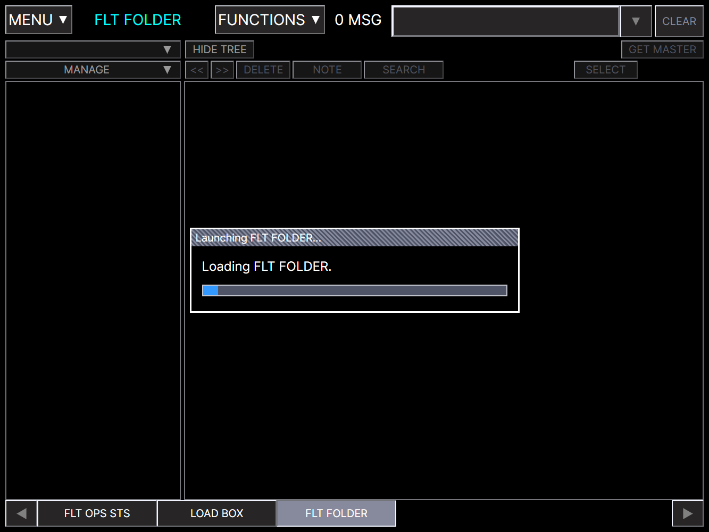
Figure 41. The launch bar
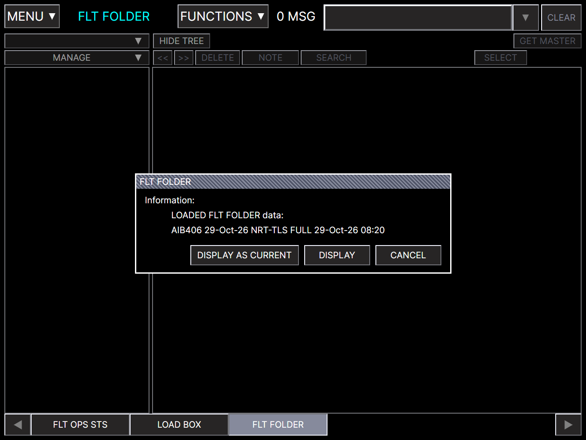
Figure 42. The import pop-up
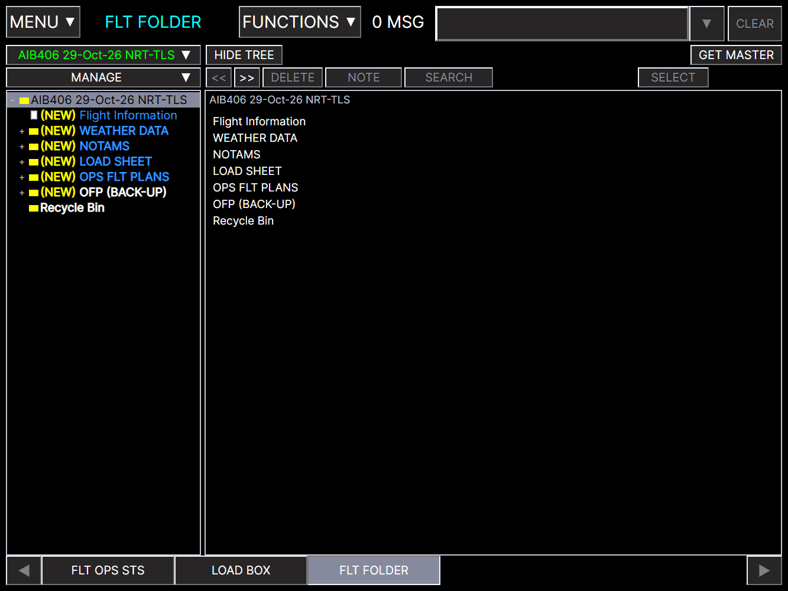
Figure 43. The document tree with the (NEW) marks and the colours
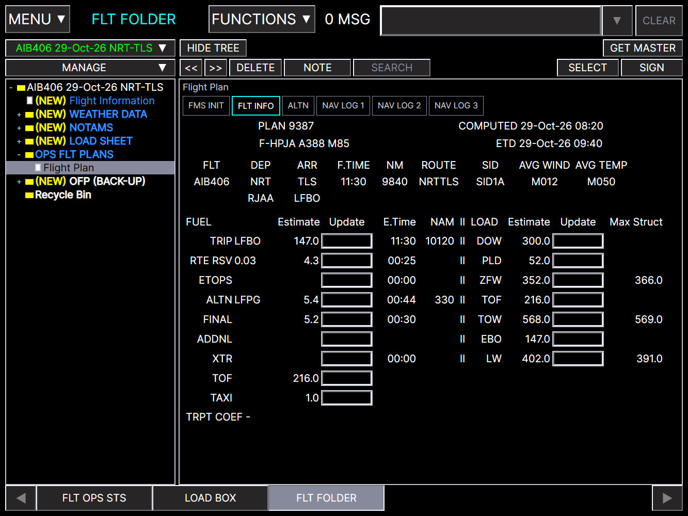
Figure 44. FLT INFO with the Update boxes
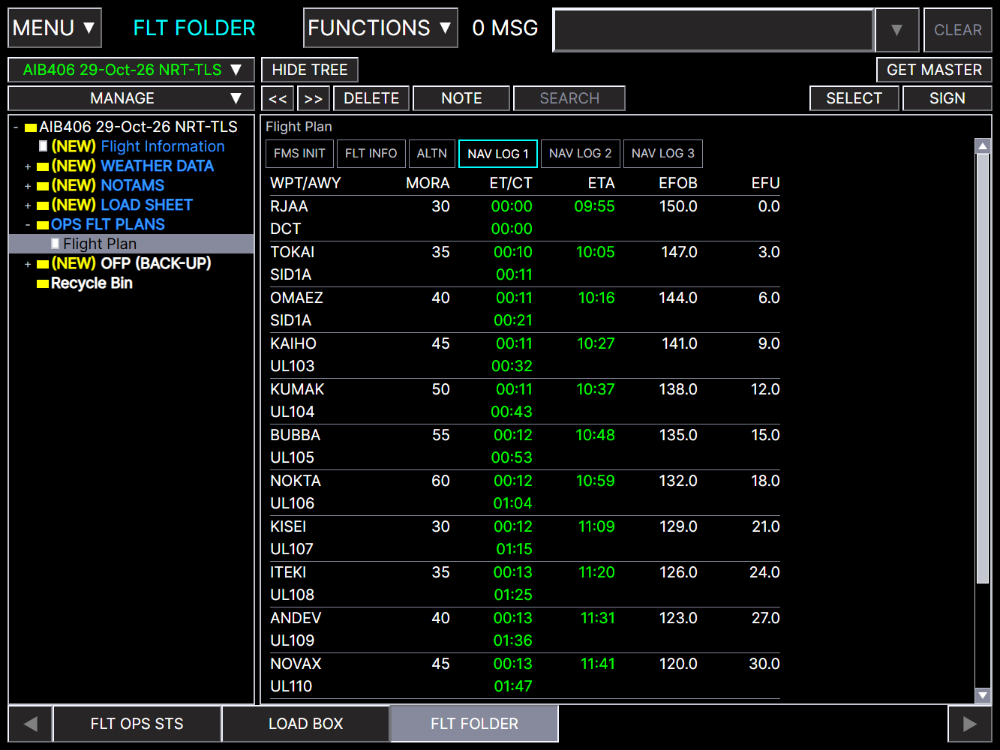
Figure 45. NAV LOG 1 with its scroll bar
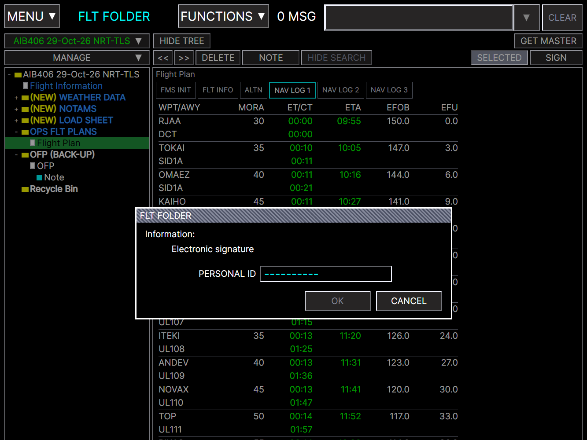
Figure 46. SIGN: the PERSONAL ID dialog (earlier build of the screen)
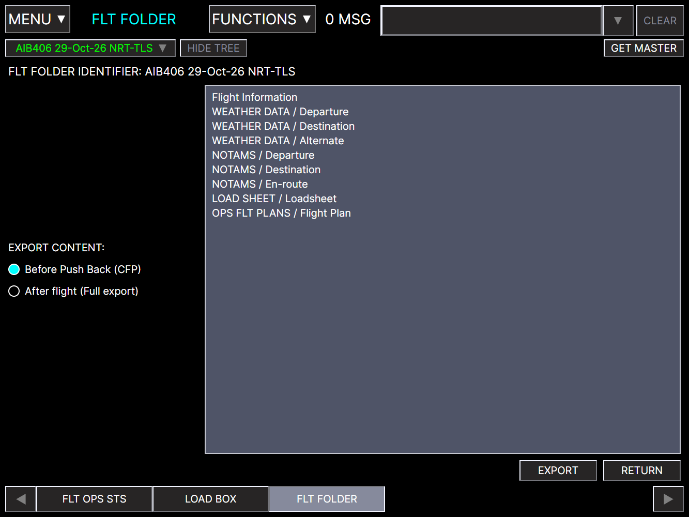
Figure 47. EXPORT FLIGHT FOLDER: Before Push Back (CFP)
Limitations and why
Limitation
Why
What to do
The folder is made of the SimBrief OFP only.
SimBrief provides text only: one text document type and the folder structure are Design choices. On this branch the METAR / TAF import of develop is not present; the NOTAMs are.
None.
How to use
Load a SimBrief OFP in the flyPad, then LOAD BOX > REFRESH LOAD BOX, tick it, LOAD.
FLT OPS > MENU > FLT FOLDER. Wait for the launch bar, then DISPLAY AS CURRENT in the pop-up.
Click a document in the tree to read it; NOTE and SEARCH as needed; SIGN or CHECK where the tree is blue.
Open OPS FLT PLANS > Flight Plan: FMS INIT, FLT INFO, ALTN, NAV LOG; SELECT makes it the active plan.
MANAGE > EXPORT FLIGHT FOLDER, choose the content, EXPORT; send it from the EXPORT BOX.
How to test
#
Do this
Expected result
1
With a SimBrief OFP loaded in the flyPad: LOAD BOX > REFRESH LOAD BOX, tick it, LOAD. Open FLT FOLDER.
The bar "Launching FLT FOLDER..." runs, then the pop-up "LOADED FLT FOLDER data" with the flight, date and route and the buttons DISPLAY AS CURRENT, DISPLAY, CANCEL.
2
DISPLAY AS CURRENT.
The tree shows the flight with Flight Information, WEATHER DATA, NOTAMS, LOAD SHEET, OPS FLT PLANS, OFP (BACK-UP) and the Recycle Bin; the unopened entries carry (NEW).
3
Click Flight Information.
The text of the OFP shows and the (NEW) mark of that entry goes.
4
Click NOTE, type a text, Save.
A note line appears under the document in the tree.
5
On a text document click SEARCH, type a word.
The number of occurrences is shown; < and > step through them with the current one in yellow.
6
Open OPS FLT PLANS > Flight Plan, tab FLT INFO. Type a figure in an Update box.
The header, FUEL and LOAD tables show; the totals are recomputed from the figure.
7
Tab NAV LOG 1: click the arrow buttons of the scroll bar.
The waypoint list scrolls to the end of the plan.
8
SELECT, then SIGN.
The plan gets the green background; the PERSONAL ID dialog opens; after OK the button reads SIGNED and the tree entry is green.
9
Go to the other laptop (CAPT / F/O) and open FLT FOLDER.
The same folder is current there. Click GET MASTER: its button reads MASTER; on the first laptop it reads GET MASTER again.
10
On the laptop that is not the master, open tab FLT INFO (and ALTN).
The Update cells are greyed and take no entry. Click GET MASTER there: they take entries again, and on the other laptop they grey.
11
MANAGE > EXPORT FLIGHT FOLDER, Before Push Back (CFP), EXPORT.
The EXPORT BOX opens with the FLT FOLDER row; the folder stays open.
19. FLT FOLDER follow-up: NAV LOG flight follow-up, NEXT WPT, REFRESH and FLT REPORT
Aircraft: A380X | Where: FLT OPS > MENU > FLT FOLDER > OPS FLT PLANS > Flight Plan > NAV LOG / FLT REPORT | Status: On core/a380x-ois and develop. Sim-tested by the user 2026-10-30 on develop (cards T32-T39): OK. Not sim-tested on the core branch itself.
What it is for
The NAV LOG of the flight folder now follows the flight (FCOM DSC-46-20-50-30). The flight plan keeps the planned figures; the avionics values are added beside them as the aircraft flies, and the crew can correct the list of waypoints.
Automatic collection: in the FMS cruise phase the laptop collects the position of the first IR that gives one, every minute and every 20 s near a waypoint (both laptops collect, only the master types). A waypoint passed within 7 nm shows its actual time (ATA) and the actual fuel on board (AFOB) in magenta boxes, and the row is framed in yellow. FUEL CHK in the row validates the figures (the box reads CHECKED).
NEXT WPT (menu at the waypoint name): a window "Next WPT from ..." takes the name of the next waypoint. A waypoint of the plan skips the ones between (they turn grey); a name outside the plan is inserted after the initial waypoint (cyan). DELETE removes a waypoint that the crew inserted (a waypoint of the OFP stays); it asks first.
FLOWN WPT scrolls the NAV LOG to the last flown waypoint. REFRESH asks the other laptop for its follow-up of the current folder and takes it.
FLT REPORT panel (the FCOM only names it, the content is a Design choice): the OUT, OFF, ON and IN times and fuel as the avionics record them, the BLOCK and FLIGHT times, and a field for remarks that stays editable until the FLIGHT CLOSURE. The take-off time goes into the folder by itself.
Master: NEXT WPT, DELETE, the boxes, FUEL CHK and the remarks work on the master laptop only; the other laptop reads. The Update cells of FLT INFO (fuel and load) and ALTN follow the same rule: on the laptop that is not the master, or when the folder is closed, they are greyed and take no entry; GET MASTER on either laptop changes them at once. The column titles of the NAV LOG stay above the scrolled rows.
The OOOI report of the AOC no longer carries the PC clock and no fuel when the aircraft starts with the park brake released: the state the aircraft starts in is recorded at the first update, when the sim clock has arrived.
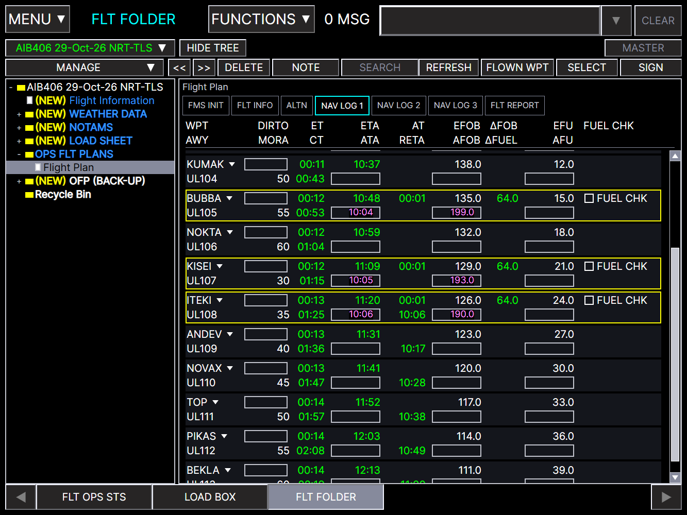
Figure 48. NAV LOG 1 after the follow-up: overflown waypoints with their actual values and FUEL CHK
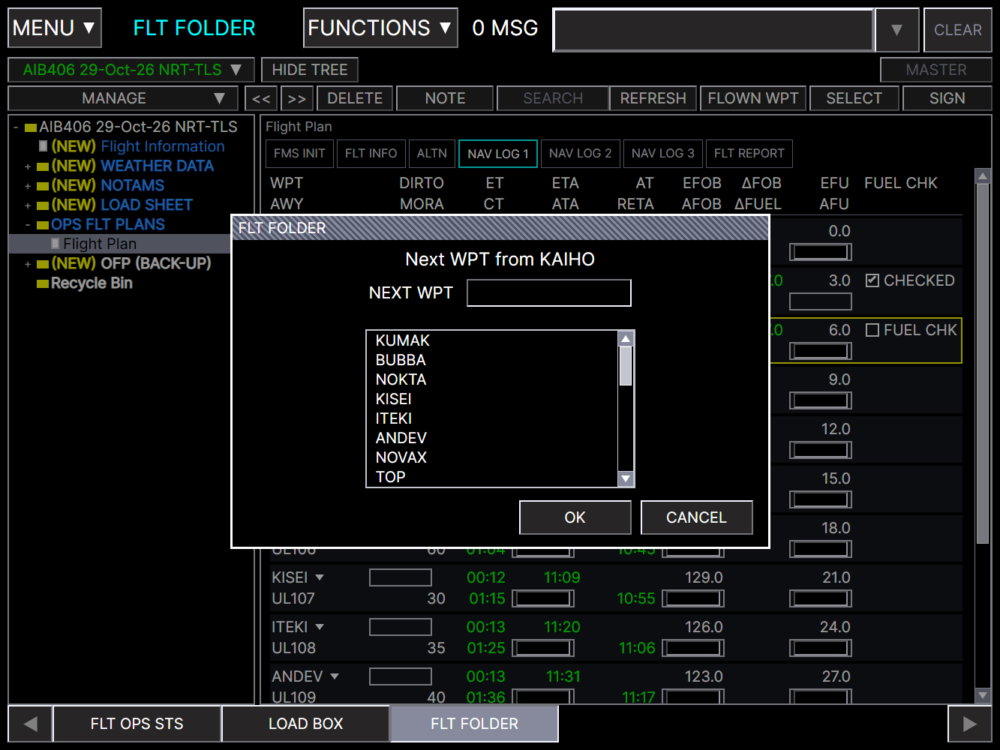
Figure 49. NEXT WPT window
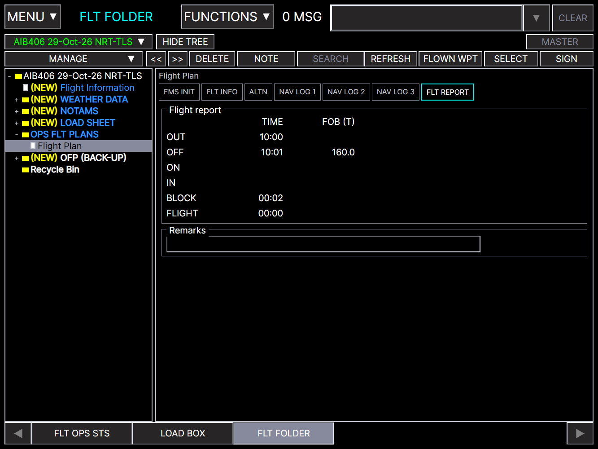
Figure 50. FLT REPORT: OUT, OFF, ON, IN times and fuel, remarks
Limitations and why
Limitation
Why
What to do
The collection runs only in the FMS cruise phase.
The FCOM describes the follow-up for the cruise; the climb and descent are not collected.
Type the actual values of a waypoint in its boxes on the master laptop.
The FLT REPORT content and the REFRESH wording are not in the FCOM.
Only the panel name and the button exist there (Design choice).
None.
Without avionics data the laptop collects nothing.
The IR positions and the fuel come over the avionics network; a laptop that does not receive them (NSS DATA TO AVNCS off, SCI lost) cannot sample.
Restore the data link.
How to use
Load the OFP, open FLT FOLDER, DISPLAY AS CURRENT, GET MASTER on the laptop you type on.
Open OPS FLT PLANS > Flight Plan > NAV LOG 1 and fly the cruise; waypoints fill themselves.
FUEL CHK in a framed row to validate it; NEXT WPT to skip or insert; DELETE for an inserted one.
FLOWN WPT to find the last flown waypoint; REFRESH on the other laptop to take the data of the master.
FLT REPORT for the times and the remarks.
How to test
#
Do this
Expected result
1
Open the NAV LOG of the current folder on the master laptop.
The column titles stay at the top while the rows scroll; the avionics boxes are empty.
2
In the FMS cruise phase pass a waypoint of the plan (within 7 nm).
Its row is framed in yellow and shows the actual time and fuel on board in magenta boxes; FUEL CHK is offered.
3
Tick FUEL CHK in that row.
The box reads CHECKED and the frame goes.
4
Menu at a waypoint name > NEXT WPT, type the name of a later waypoint of the plan, OK.
The waypoints between are skipped (grey).
5
NEXT WPT with a name that is not in the plan, then DELETE on that row, OK.
The waypoint is inserted in cyan, then removed; DELETE is greyed on the rows of the OFP.
6
FLOWN WPT.
The list scrolls to the last flown waypoint.
7
On the other (non-master) laptop open the NAV LOG, then REFRESH.
The follow-up of the master appears; the boxes cannot be typed in.
8
FLT REPORT after take-off and after landing.
The OFF time, then the ON time fill with their fuel; the remarks field accepts text.
20. STORE: the performance pages keep their result in the flight folder
Aircraft: A380X | Where: FLT OPS > T.O PERF, LDG PERF, LOADSHEET, IN-FLT PERF > FUNCTIONS > STORE | Status: On core/a380x-ois and develop. Sim-tested by the user 2026-10-30 on develop (cards T32-T39): OK. Not sim-tested on the core branch itself.
What it is for
FUNCTIONS > STORE keeps the page as a document in the Performance folder of the current flight folder (FCOM DSC-46-20-50-30): T.O PERF as TOPA, LDG PERF as LDPA, LOADSHEET as WBA and IN-FLT PERF as IFPA, numbered 1, 2, ... A pop-up "Information: Document stored in FLT FOLDER" with OK confirms it.
The stored document is the text of the page printout (what PRINT would print), not a picture (Design choice: the FCOM shows no snapshot format). Open it in FLT FOLDER > (NEW) Performance; NOTE and SEARCH work on it like on the other documents.
STORE is greyed without a current flight folder and with a closed one. While the pop-up is open STORE is unavailable: one click cannot store twice.
IN-FLT PERF has its own printout of the ATMO results, as the FCOM names the document IFPA but shows no snapshot.
In the folder the printouts use the shipped JetBrains Mono font (the generic monospace font of the sim has no degree sign and no equal width), at the largest size at which the longest line fits.
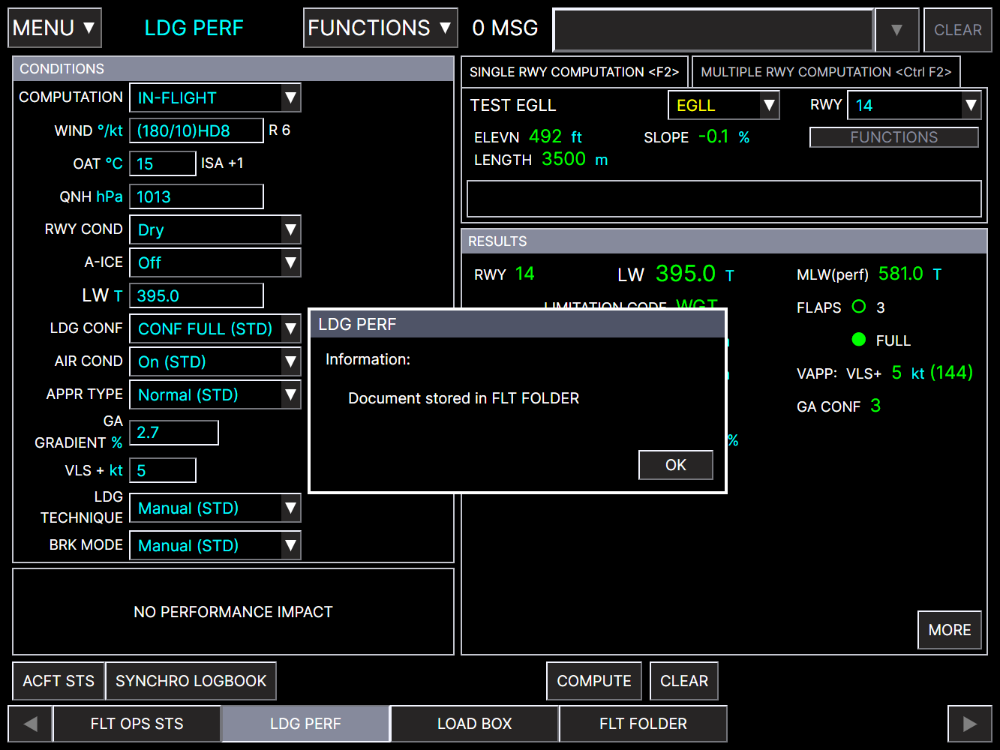
Figure 51. LDG PERF after STORE: the Information pop-upFigure 52. The stored LDPA_1 in the Performance folder
Limitations and why
Limitation
Why
What to do
The stored document is text.
The FCOM shows no snapshot format; the printout text is what the pages already produce.
None.
A second STORE of the same page makes a new document.
The FCOM does not say that a document is replaced.
DELETE the old one in the folder.
How to use
Open a flight folder as current (FLT FOLDER, DISPLAY AS CURRENT).
Compute in T.O PERF, LDG PERF, LOADSHEET or IN-FLT PERF, then FUNCTIONS > STORE and OK.
FLT FOLDER > Performance to read the stored document.
How to test
#
Do this
Expected result
1
Without a current folder open LDG PERF and compute.
FUNCTIONS > STORE is greyed.
2
With a current folder: LDG PERF, COMPUTE, FUNCTIONS > STORE.
The pop-up "Document stored in FLT FOLDER" appears; FUNCTIONS > STORE is greyed while it is open.
3
OK, then FLT FOLDER.
A (NEW) Performance folder holds LDPA_1; its text has the degree signs and aligned columns.
4
Repeat for T.O PERF, LOADSHEET and IN-FLT PERF.
TOPA_1, WBA_1 and IFPA_1 appear in the folder.
21. TERML CHART: the terminal charts of the simulator on the OIT
Aircraft: A380X | Where: FLT OPS > MENU > TERML CHART (the CHARTS key) | Status: On core/a380x-ois and develop. Sim-tested by the user 2026-10-30 on develop (cards T32-T39, including 15 minutes with the application in use): OK. Not sim-tested on the core branch itself.
What it is for
The CHARTS key of FLT OPS opens a native terminal chart viewer on the chart service of the simulator (LIDO; the FCOM lets the operator choose JEPPESEN or LIDO for NAV CHARTS). It needs no account. The flyPad keeps its own Navigraph charts.
AIRPORT keys: the departure and the destination of the FLT OPS STS page, then the airports you add (ADD field, REMOVE).
Tabs: GEN, ARPT, DEP, ARR, APPR (the chart groups of the airport) and PREPARED; the RWY menu filters by runway. The list on the left shows the charts, the chart opens on the right with the page arrows (PAGE 1/3), ZOOM +, ZOOM -, FIT and the move arrows; a click on the chart centres it.
CLIPBOARD menu: Prepare chart / Remove chart, Clear all, Send to other laptop and Import. The prepared charts form the PREPARED tab; SEND offers them to the other laptop, which imports them. On the receiving laptop the tab reads PREPARED (NEW) (with the count, for example PREPARED 3 (NEW)) from the moment charts arrive until the PREPARED tab is opened with the CHARTS page, and again after a later send; it is the same (NEW) mark as in FLT FOLDER (a Design choice, the FCOM shows no cue). A laptop that is off the network sends and receives nothing.
FLT OPS STS shows "ACTIVE" and the validity dates of the charts once the application has been started on this laptop (blank before).
When the service does not answer, the list says CHARTS NOT AVAILABLE with a RETRY button. HOME in the FUNCTIONS menu leaves the application.
Figure 53. DEP charts of LFBO; the chart shown is a test image of the harnessFigure 54. The CLIPBOARD menu
Figure 55. The receiving laptop: the tab reads PREPARED 1 (NEW)Figure 56. FLT OPS STS with the validity of the charts
Limitations and why
Limitation
Why
What to do
No own-ship symbol, no day / night look, no PRINT.
The FCOM gives the aircraft position only to dynamic en-route charts; the charts are light images (Design choice).
None.
The en-route charts of NAV CHARTS are not there.
The chart service of the sim offers terminal charts.
Use the flyPad charts.
How to use
Load a flight in FLT OPS STS (FROM and TO), then FLT OPS > MENU > TERML CHART.
Click an airport key, a tab (DEP, ARR, APPR ...) and a chart in the list; ZOOM, FIT and the arrows to look.
CLIPBOARD > Prepare chart for the charts you need; Send to other laptop; on the other laptop Import.
How to test
#
Do this
Expected result
1
FLT OPS STS: check FROM and TO. TERML CHART.
Two airport keys with the airports; the DEP tab lists the departure charts.
2
Click a chart, then ZOOM +, the move arrows, FIT.
The chart zooms, moves and returns to the whole page; the page arrows show the next page.
3
ADD an airport (four letters), then REMOVE.
A key for it appears and goes again; the airports of the flight stay.
4
CLIPBOARD > Prepare chart, then Send to other laptop; on the other laptop CLIPBOARD > Import.
The chart is in the PREPARED tab of the other laptop. Before the import the tab of that laptop reads PREPARED (NEW) until its PREPARED tab is opened.
5
Back to FLT OPS STS.
The line "ACTIVE ... CHARTS" shows two dates in green.
6
Leave the application and open it again ten times.
No crash; the airport and its charts show again.
22. Spaces in input fields and the laptop SPACE keys
Aircraft: A380X | Where: OIT, MFD and ND input fields; CAPT and F/O laptop keyboards | Status: On core/a380x-ois and develop. Sim-tested by the user 2026-10-29 on develop: OK. The input field change is shared with the MFD and the ND.
What it is for
The sim does not always send the key press of the space bar to a page. The shared input field now also takes the space from the key-down. When both the key-down and the key press of the same press arrive, only one space is entered (the two are taken as one press within 150 ms).
So spaces can be typed with the PC keyboard in the input fields of the OIT (for example the OPS LIBRARY word search, the FLT FOLDER notes), and also of the MFD and the ND.
On the 3D laptop keyboards, the SPACE keys of the left and right half (SPACE_LH, SPACE_RH) now send the SP key.
Limitations and why
Limitation
Why
What to do
The key handlers of the input field are not covered by a unit test.
Only the decision to enter one space is tested; the key events need the sim.
None.
How to use
Click an input field and type with the PC keyboard; on a laptop keyboard click SPACE.
How to test
#
Do this
Expected result
1
OPS LIBRARY > SEARCH, WORD SEARCH field: type two words with the PC keyboard.
One space stays between the words (not zero, not two).
2
Click the SPACE key of the CAPT laptop keyboard in the same field.
One space is typed.
3
Click a text field of the MFD or the ND (for example the free text of an ATC COM message) and type a space.